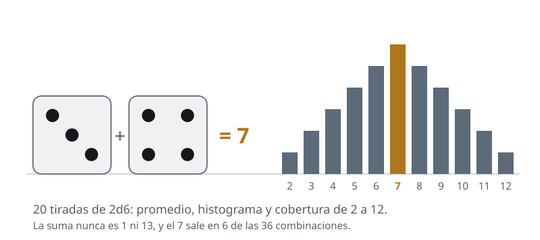
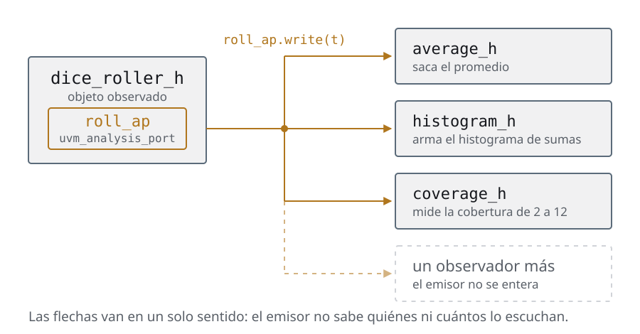
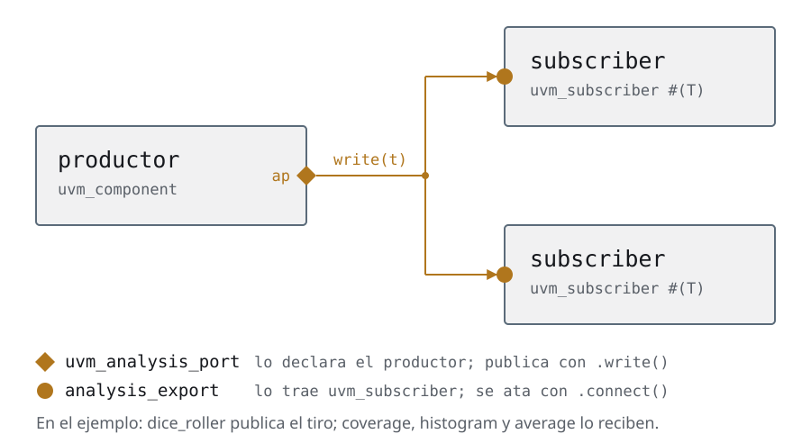
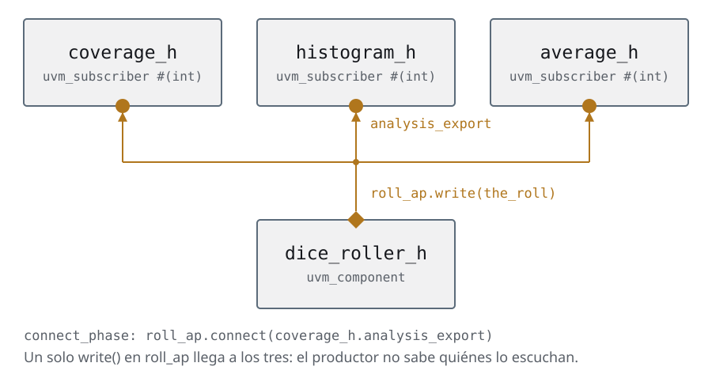
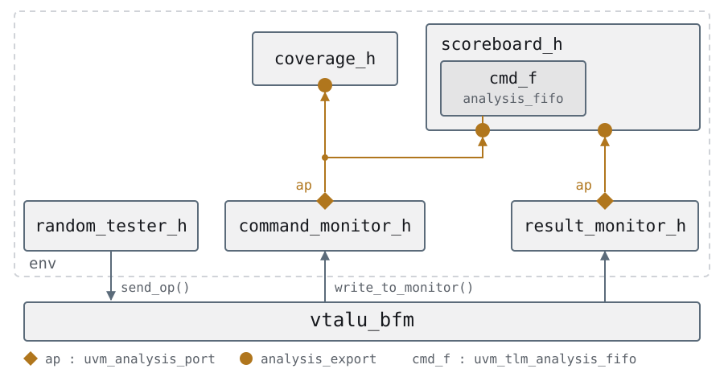
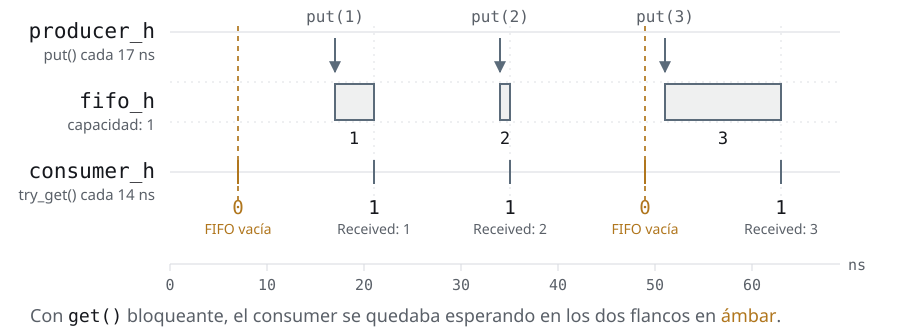
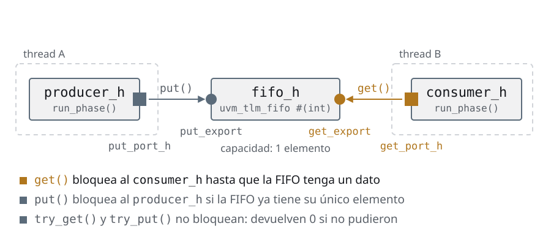
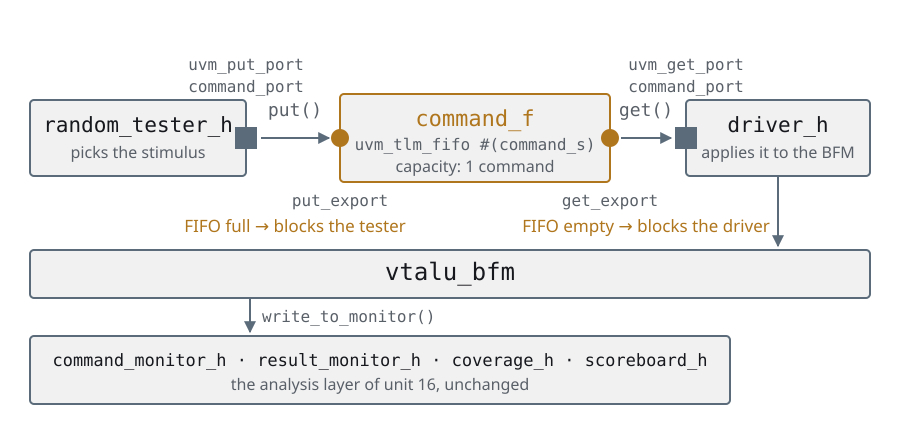

Día 4Cómo hablan los componentes
Las mismas slides del deck, con las notas del instructor adentro del texto y el código completo. Si estás haciendo el curso solo, empezá por acá y tené el deck al lado para los repasos.
Agenda
Día 4 · ≈ 4 h · unidad 5 · cómo hablan los componentes
- Un productor, muchos oyentes
- Un solo lugar que mira el cable
- Cuando alguien tiene que esperar
- Quién espera a quién
Un productor, muchos oyentes
Dos formas de hablar entre objetos
- El paradigma estructural pregunta qué pasos seguir. La OOP pregunta qué
objetos hay y cómo se hablan — y ahí se acaba el testbench de un solo
initial - Y hablarse, entre objetos, es exactamente dos cosas. La diferencia está en si los dos corren en el mismo thread o no
- Mismo thread: uno llama al método del otro y vuelve enseguida. Es el
write()de unuvm_analysis_port— las dos primeras secciones del día - Threads distintos: los dos corren a la vez y hay que coordinarlos, o
sea que alguien va a tener que esperar. Es
put/gety las TLM FIFOs — las dos últimas - El día 4 entero son esas dos columnas. Arrancamos por la de la izquierda
Esta slide es el mapa del día: las cuatro secciones que vienen son las dos
columnas de abajo, en orden.
Vale escribir las dos columnas en el pizarrón y volver a ellas cada vez que
aparezca un puerto nuevo, porque la pregunta que hay que hacerse frente a
cualquier port de UVM es siempre la misma: ¿esto puede bloquear? Si corre en
mi thread, no; si corre en otro, sí, y entonces tiene que ser una task.
Ése es también el criterio que ordena el vocabulario del día: write() es una
function —no consume tiempo—, put() y get() son task. La firma te dice de
qué lado de la división estás antes de leer una línea de la implementación.
Un productor, muchos oyentes
El que publica no sabe quién lo lee
- Un dato del testbench casi nunca tiene un destinatario: cada comando que ve el monitor lo quieren el scoreboard, la cobertura y, mañana, el log
- La solución obvia es que el productor guarde un handle a cada consumidor y les llame el método. Funciona, y agregar un consumidor obliga a tocar el productor
- Es el mismo problema que resolvió el BFM en interfaces y BFM, un nivel más arriba: ahí escondimos el cable, acá queremos esconder la lista de destinatarios
- La respuesta es un patrón viejo: el productor publica en un puerto y no sabe —ni le importa— quién está del otro lado
- La sección lo arma primero a mano con dados, y recién después lo reemplaza por
uvm_analysis_port. El ejemplo es ajeno al hardware a propósito
El ejemplo de los dados es deliberado y conviene defenderlo si alguien pregunta
por qué no arrancamos con el VTALU: se ve el patrón sin el ruido del protocolo.
Cuando en los analysis ports aparezca sobre el DUT, el alumno ya no está aprendiendo
dos cosas a la vez.
La pregunta que ordena la sección: ¿cuál es la única línea que hay que escribir
para agregar un cuarto observador? Un connect(). Ninguna en el productor. Ese es
el criterio con el que hay que mirar todo el código de acá en adelante.
Y conviene anticipar el límite, porque es la comunicación entre threads: esto es comunicación
dentro de un solo thread. write() es una function, no consume tiempo, y
corre en el thread del que publica. Para hablar entre threads hace falta otra
cosa.
Un productor, muchos oyentes
El problema: dos dados, tres cosas que hay que contar
- Escribir un programa que simule la ejecución de tirar dos dados (2d6) 20 veces e informe lo siguiente
- El promedio de los valores que dieron los dados
- Un histograma con la frecuencia de valores
- Un reporte de cobertura que muestre si salieron todos los posibles valores de 2 a 12

Vale plantearlo como problema de programación antes de mostrar una línea: son tres consumidores del mismo dato, y cada uno hace algo distinto con él. Nadie piensa en hardware acá, que es exactamente la idea. Los tres informes tienen algo en común que conviene hacer notar ahora: ninguno se puede calcular con una sola tirada. Los tres acumulan y recién informan al final, y por eso los tres van a necesitar dos métodos, no uno. Y una pregunta rápida para el aula, que después se cobra: si mañana piden un cuarto informe —la tirada más repetida, digamos—, ¿qué archivos hay que tocar?
Un productor, muchos oyentes
Los tres observadores: la misma forma, tres cuerpos
code/u5/varios-objetos/01-sin-analysis-port/average.svhclass average extends uvm_component;
`uvm_component_utils(average);
protected real dice_total;
protected real count;
function new(string name, uvm_component parent = null);
super.new(name, parent);
dice_total = 0.0;
count = 0.0;
endfunction : new
function void write(int t);
dice_total = dice_total + t;
count++;
endfunction : write
function void report_phase(uvm_phase phase);
`uvm_info("AVERAGE", $sformatf("DICE AVERAGE: %2.1f", dice_total / count), UVM_NONE)
endfunction : report_phase
endclass : averageaveragees el más simple: unwrite(int t)que acumula, y unreport_phase()que divide e informa al final- Ésa es la forma que van a tener los tres: reciben una tirada de a una, y el resultado recién existe cuando terminó todo
Vale mostrar la clase entera una sola vez —ésta— y después sólo los write(),
porque lo que interesa es que la forma se repita.
Dos detalles que se cobran después: el report_phase corre cuando cae la
última objection, no al final del run_phase, y por eso el promedio sale
completo. Y dice_total y count son protected: el que publica no puede
tocarlos, sólo llamar a write().
Cuando esto sea el VTALU, en los analysis ports, average va a ser el scoreboard y el
report_phase el veredicto de la corrida. Misma forma.
Un productor, muchos oyentes
Los otros dos: cambia el cuerpo, no la forma
code/u5/varios-objetos/01-sin-analysis-port/histogram.svh · #write function void write(int t);
rolls[t]++;
endfunction : writeel archivo entero, 29 líneas
class histogram extends uvm_component;
`uvm_component_utils(histogram);
int rolls[int];
function new(string name, uvm_component parent);
super.new(name, parent);
for (int ii = 2; ii <= 12; ii++) rolls[ii] = 0;
endfunction : new
function void write(int t);
rolls[t]++;
endfunction : write
function void report_phase(uvm_phase phase);
string bar;
string message;
message = "\n";
foreach (rolls[ii]) begin
string roll_msg;
bar = "";
repeat (rolls[ii]) bar = {bar, "#"};
roll_msg = $sformatf("%2d: %s\n", ii, bar);
message = {message, roll_msg};
end
`uvm_info("HISTOGRAM", message, UVM_NONE)
endfunction : report_phase
endclass : histogramcode/u5/varios-objetos/01-sin-analysis-port/coverage.svh · #write function void write(int t);
the_roll = t;
dice_cg.sample();
endfunction : writeel archivo entero, 24 líneas
class coverage extends uvm_component;
`uvm_component_utils(coverage);
int the_roll;
covergroup dice_cg;
coverpoint the_roll {bins twod6[] = {2, 3, 4, 5, 6, 7, 8, 9, 10, 11, 12};}
endgroup
function new(string name, uvm_component parent = null);
super.new(name, parent);
dice_cg = new();
endfunction : new
function void write(int t);
the_roll = t;
dice_cg.sample();
endfunction : write
function void report_phase(uvm_phase phase);
`uvm_info("COVERAGE", $sformatf("COVERAGE: %2.0f%%", dice_cg.get_inst_coverage()),
UVM_NONE)
endfunction : report_phase
endclass : coveragehistogramguarda las tiradas en un array asociativo y dibuja las barras en elreport_phasecoveragecopia la tirada athe_rolly llama asample(): es el covergroup del testbench convencional, con el muestreo atado al dato en vez de al reloj- Los tres
write()son distintos por dentro y idénticos por fuera: mismo nombre, mismo argumento. Eso es lo que va a permitir tratarlos igual
El punto de la slide es el último bullet: tres clases que no se parecen en nada
exponen la misma puerta. Cuando aparezca uvm_subscriber, esa puerta va a ser
un contrato del lenguaje en vez de una convención.
El coverage de acá es la respuesta a una pregunta que quedó abierta en el testbench convencional: ¿dónde muestreo? Acá el sample() no está atado a un flanco de
reloj, está atado a que llegó un dato. Eso es lo correcto, y es lo que hace
el coverage de todos los testbenches del curso de acá en adelante.
El archivo entero de cada uno está en code/u5/varios-objetos/01-sin-analysis-port/: lo que
no se muestra es el report_phase, que sólo formatea.
Un productor, muchos oyentes
El productor: tira los dados y devuelve un número
code/u5/varios-objetos/01-sin-analysis-port/dice_roller.svh · #dice_rollerclass dice_roller extends uvm_component;
`uvm_component_utils(dice_roller);
rand byte die1;
rand byte die2;
constraint d6 {
die1 >= 1;
die1 <= 6;
die2 >= 1;
die2 <= 6;
}
function new(string name, uvm_component parent);
super.new(name, parent);
endfunction : new
function byte two_dice();
byte the_roll;
void'(randomize());
the_roll = die1 + die2;
return the_roll;
endfunction : two_dice
endclass : dice_rollerel archivo entero, 25 líneas
class dice_roller extends uvm_component;
`uvm_component_utils(dice_roller);
rand byte die1;
rand byte die2;
constraint d6 {
die1 >= 1;
die1 <= 6;
die2 >= 1;
die2 <= 6;
}
function new(string name, uvm_component parent);
super.new(name, parent);
endfunction : new
function byte two_dice();
byte the_roll;
void'(randomize());
the_roll = die1 + die2;
return the_roll;
endfunction : two_dice
endclass : dice_rollerdice_rollerrandomiza dos bytes con unconstraintque los deja entre 1 y 6, y devuelve la suma- Es todo lo que hace, y está bien que sea todo: produce el dato y no sabe nada de quién lo usa
- Fijate lo que no tiene: ni un handle a
coverage_h, ni ahistogram_h, ni aaverage_h. Esa lista está en otro lado, y ahí está el problema
Conviene detenerse en la ausencia: el productor ya está bien escrito. No hay que
arreglarlo, y de hecho en la versión con analysis port casi no cambia.
El void'(randomize()) merece un comentario al pasar: descarta el valor de
retorno a propósito. En las transactions vamos a ver por qué eso es una mala
costumbre —un randomize() que falla y nadie se entera— y cómo se escribe bien.
La pregunta para dejar picando: si el productor no tiene la lista, ¿quién la
tiene? La slide que sigue.
Un productor, muchos oyentes
El que reparte: el test, y no debería
- El
dice_testextiendeuvm_test, instancia los cuatro componentes y arranca - Funciona. Pero mirá el
run_phase, y en particular qué hay adentro delrepeat (20)
code/u5/varios-objetos/01-sin-analysis-port/dice_test.svh · #run_phase task run_phase(uvm_phase phase);
int the_roll;
phase.raise_objection(this);
// This part needs attention.
// What belongs here is:
// the Observer design pattern
// a UVM analysis port
// Otherwise none of the OOP magic is being used:
// these are plain functions passing data along
repeat (20) begin
the_roll = dice_roller_h.two_dice();
coverage_h.write(the_roll);
histogram_h.write(the_roll);
average_h.write(the_roll);
end
phase.drop_objection(this);
endtask : run_phaseel archivo entero, 38 líneas
class dice_test extends uvm_test;
`uvm_component_utils(dice_test);
dice_roller dice_roller_h;
coverage coverage_h;
histogram histogram_h;
average average_h;
function void build_phase(uvm_phase phase);
coverage_h = new("coverage_h", this);
histogram_h = new("histogram_h", this);
average_h = new("average_h", this);
dice_roller_h = new("dice_roller_h", this);
endfunction : build_phase
task run_phase(uvm_phase phase);
int the_roll;
phase.raise_objection(this);
// This part needs attention.
// What belongs here is:
// the Observer design pattern
// a UVM analysis port
// Otherwise none of the OOP magic is being used:
// these are plain functions passing data along
repeat (20) begin
the_roll = dice_roller_h.two_dice();
coverage_h.write(the_roll);
histogram_h.write(the_roll);
average_h.write(the_roll);
end
phase.drop_objection(this);
endtask : run_phase
function new(string name, uvm_component parent);
super.new(name, parent);
endfunction : new
endclass : dice_testEsta slide es el "antes", y hay que dejar que se vea feo. Mirá el repeat (20):
tres write() escritos a mano, uno por observador. Agregar un cuarto es tocar
esta clase; sacar uno, también.
Peor todavía, y es lo que conviene señalar: el que quedó a cargo de repartir el
dato es el test. O sea que el dice_roller produce y el test distribuye —
dos responsabilidades que no tienen por qué estar juntas, y la de distribuir es
la que va a cambiar todo el tiempo.
La pregunta para tirar antes de pasar a la siguiente: si esto fuera el VTALU,
¿quién sería el dice_roller y quiénes los tres write()? El monitor, y el
scoreboard más la cobertura. Los analysis ports son literalmente esta slide con otros
nombres.
Un productor, muchos oyentes
Observer Design Pattern
- El que publica un tweet no sabe quién lo lee ni qué hace con él, y sin embargo llega a todos. Eso es el Observer
- Un objeto produce un dato y lo publica. Los que necesitan ese dato se suscriben. El productor no lleva la lista
- Acá el observado es
dice_roller_h; los observadores —subscribers— soncoverage_h,histogram_hyaverage_h - La propiedad que compra todo: agregar un cuarto observador no toca una línea del que produce

La analogía funciona mejor dada vuelta: el que publica no sabe quién lo lee, y ésa es justo la propiedad que querés en un monitor. Agregar un subscriber nuevo —otra cobertura, un log— no toca una línea del que produce el dato. El ejemplo de los dados es a propósito ajeno al hardware: se ve el patrón sin el ruido del protocolo.
Un productor, muchos oyentes
El patrón, ya hecho: las dos puntas del cable
- UVM trae el patrón hecho, en dos clases que son las dos puntas del cable:
- uvm_analysis_port: Envía data a un conjunto de subscribers (observadores)
- uvm_subscriber: Extensión de uvm_component que permite al componente suscribirse a un uvm_analysis_port

Los nombres cuestan un minuto y ahorran media hora después: port es la punta
del que produce, export la del que consume, y el connect() siempre se
llama sobre el port.
uvm_analysis_port es un broadcast: no le importa si tiene cero, uno o diez
subscribers, y escribir en un port sin conectar no es un error — el dato se
pierde en silencio. Es una de las trampas mudas del curso, y el síntoma es un
scoreboard que nunca reporta nada.
uvm_subscriber es la otra punta y es una clase parametrizada: #(int) acá,
#(command_transaction) en los analysis ports. La conexión queda tipada por el
compilador, no por un string.
Un productor, muchos oyentes
uvm_analysis_port
- Declaramos una variable del tipo uvm_analysis_port que defina el tipo de datos que va a transportar
- Instanciamos el analysis port en build_phase
- Escribimos datos en el puerto mediante el método .write()
- Una vez que escribimos datos en el puerto, este va a todos sus subscribers
- Utilizamos el método connect() para conectar los subscribers al puerto. Este método tiene un único argumento, y es el export del subscriber (
analysis_export), no otro port
code/u5/varios-objetos/02-con-analysis-port/con-analysis-port.svclass dice_roller extends uvm_component;
`uvm_component_utils(dice_roller);
uvm_analysis_port #(int) roll_ap;
function void build_phase (uvm_phase phase);
roll_ap = new("roll_ap",this);
endfunction : build_phaseTres pasos y ninguno más: declarar el port, instanciarlo en build_phase, escribir con write(). Del otro lado el subscriber implementa write() y se conecta en connect_phase. El detalle que sorprende: los ports no se crean con la factory, se instancian con new().
Un productor, muchos oyentes
uvm_subscriber
- Extendemos la clase uvm_subscriber paramétricamente, para saber qué tipo de datos va a leer
- La clase nos da un objeto llamado analysis_export
- La clase requiere que creemos un método llamado write() que tiene un único argumento t, que es del mismo tipo que la extensión de la clase
- En nuestro ejemplo, tenemos 3 subscribers (average, coverage y histogram)
code/u5/varios-objetos/02-con-analysis-port/coverage.svh// uvm_subscriber:
// extends the uvm_component class and lets you hook onto an analysis port
// It is a parameterizable class!
// The class gives you something and asks for something in return
// * It gives you an object called analysis_export
// * It asks you to write a write() method that handles the data
class coverage extends uvm_subscriber #(int);
`uvm_component_utils(coverage);
int the_roll;
covergroup dice_cg;
coverpoint the_roll {bins twod6[] = {2, 3, 4, 5, 6, 7, 8, 9, 10, 11, 12};}
endgroup
function new(string name, uvm_component parent = null);
super.new(name, parent);
dice_cg = new();
endfunction : new
function void write(int t);
the_roll = t;
dice_cg.sample();
endfunction : write
function void report_phase(uvm_phase phase);
`uvm_info("COVERAGE", $sformatf("COVERAGE: %2.0f%%", dice_cg.get_inst_coverage()),
UVM_NONE)
endfunction : report_phase
endclass : coverageuvm_subscriber es un trato en dos partes y conviene enunciarlo así: te doy un
analysis_export, me devolvés un write(). Nada más. El analysis_export no
se declara ni se instancia — viene con la clase.
El #(int) del extends es las clases paramétricas cobrando otra vez: define de qué tipo es
el t del write(), y el compilador se encarga de que un puerto de int no se
pueda conectar a un subscriber de otra cosa. La conexión está tipada, no es
un string.
Comparar con la versión anterior de esta misma clase vale la pena: el write()
es idéntico. Lo único que cambió es de quién hereda y quién lo llama. Ese es el
punto entero de la sección — el observador no se entera de que ahora es un
observador.
Y un detalle que aparece en la salida: acá la cobertura se lee con
get_inst_coverage(), no con get_coverage(). Es una limitación de Verilator
—la type-wide devuelve siempre 0— y está en docs/verilator.md.
Un productor, muchos oyentes
El productor, ahora publicando
code/u5/varios-objetos/02-con-analysis-port/dice_roller.svh · #port-and-run // 1) declare the port, with the data type it will carry
uvm_analysis_port #(int) roll_ap;
// 2) instantiate it in build_phase, with new(): ports do not go through the factory
function void build_phase(uvm_phase phase);
roll_ap = new("roll_ap", this);
endfunction : build_phase
task run_phase(uvm_phase phase);
int the_roll;
phase.raise_objection(this);
void'(randomize());
repeat (40) begin
void'(randomize());
the_roll = die1 + die2;
// 3) write: the port calls write() on every subscriber
roll_ap.write(the_roll);
end
phase.drop_objection(this);
endtask : run_phaseel archivo entero, 41 líneas
// Same as version 01, but publishing: instead of returning the number it writes
// it to an analysis port, and stops knowing who reads it.
class dice_roller extends uvm_component;
`uvm_component_utils(dice_roller);
rand byte die1;
rand byte die2;
constraint d6 {
die1 >= 1;
die1 <= 6;
die2 >= 1;
die2 <= 6;
}
function new(string name, uvm_component parent);
super.new(name, parent);
endfunction : new
// 1) declare the port, with the data type it will carry
uvm_analysis_port #(int) roll_ap;
// 2) instantiate it in build_phase, with new(): ports do not go through the factory
function void build_phase(uvm_phase phase);
roll_ap = new("roll_ap", this);
endfunction : build_phase
task run_phase(uvm_phase phase);
int the_roll;
phase.raise_objection(this);
void'(randomize());
repeat (40) begin
void'(randomize());
the_roll = die1 + die2;
// 3) write: the port calls write() on every subscriber
roll_ap.write(the_roll);
end
phase.drop_objection(this);
endtask : run_phase
endclass : dice_roller- Los tres pasos numerados son todo lo que cambió respecto de la versión
anterior: declarar el port, instanciarlo en
build_phase, escribir conwrite() roll_ap = new(...): los ports no se crean con la factory. Son el cableado del testbench, no piezas intercambiables- El
two_dice()que devolvía un número desapareció: ahora la tirada se publica y el productor sigue de largo
La comparación con la versión anterior es la slide entera: el dice_roller no
ganó ningún handle a nadie. Ganó un port.
Por qué los ports van con new() y no con type_id::create(): la factory está
para sustituir tipos, y un port no se sustituye nunca. Es una pregunta que sale
siempre y la respuesta corta es ésa.
Y el write() de acá conviene mirarlo con la comunicación entre threads en mente: es una
function, así que no consume tiempo y corre en el thread del productor.
Cuando el que consume necesite hacer esperar al que produce, esto no alcanza.
Un productor, muchos oyentes
connect_phase(): dónde se arma el cableado
- Necesitamos vincular al productor con el consumidor
- UVM provee un phase method (connect_phase()) para conectar los objetos
- UVM llama al método build_phase de manera TOPDOWN, una vez terminado con todos los objetos en la jerarquía, UVM llama al método connect_phase de manera BottomUP
- El proceso de conexión tiene 2 partes fundamentales
- Los uvm_subscribers contienen un objeto llamado analysis_export, que no debemos instanciarlo ya que viene cuando extendemos la clase uvm_subscriber
- La clase uvm_analysis_port provee un método llamado connect()
El orden de las dos fases no es un detalle de implementación, es lo que hace que
esto funcione: no se puede conectar lo que todavía no existe. Por eso
build_phase es top-down y termina entera antes de que arranque el primer
connect_phase.
Que connect_phase sea bottom-up importa menos en la práctica, pero tiene su
razón: un componente compuesto conecta sus hijos entre sí recién cuando cada
hijo ya conectó lo suyo. En los agents, cuando el agent conecte driver y
sequencer adentro suyo y el env conecte el agent hacia afuera, se va a ver.
El analysis_export que aparece solo es de las pocas cosas de UVM que son
gratis: viene con la clase, y olvidarse de instanciarlo no es un error porque no
hay nada que instanciar.
Un productor, muchos oyentes
connect_phase(): dónde se arma el cableado
- Una sola línea de
connect_phase()engancha al subscriber con el analysis port:ap.connect(sub_h.analysis_export)
code/u5/varios-objetos/02-con-analysis-port/dice_test.svh · #build-and-connect // build_phase: UVM calls it TOP-DOWN, the parent first.
function void build_phase(uvm_phase phase);
dice_roller_h = new("dice_roller_h", this);
coverage_h = new("coverage_h", this);
histogram_h = new("histogram_h", this);
average_h = new("average_h", this);
endfunction : build_phase
// connect_phase: BOTTOM-UP, and always port.connect(export).
function void connect_phase(uvm_phase phase);
dice_roller_h.roll_ap.connect(coverage_h.analysis_export);
dice_roller_h.roll_ap.connect(histogram_h.analysis_export);
dice_roller_h.roll_ap.connect(average_h.analysis_export);
endfunction : connect_phaseel archivo entero, 30 líneas
// The structure of the example: it instantiates the four components and WIRES the
// producer to the three observers. The run_phase is gone.
class dice_test extends uvm_test;
`uvm_component_utils(dice_test);
dice_roller dice_roller_h;
coverage coverage_h;
histogram histogram_h;
average average_h;
function new(string name, uvm_component parent);
super.new(name, parent);
endfunction : new
// build_phase: UVM calls it TOP-DOWN, the parent first.
function void build_phase(uvm_phase phase);
dice_roller_h = new("dice_roller_h", this);
coverage_h = new("coverage_h", this);
histogram_h = new("histogram_h", this);
average_h = new("average_h", this);
endfunction : build_phase
// connect_phase: BOTTOM-UP, and always port.connect(export).
function void connect_phase(uvm_phase phase);
dice_roller_h.roll_ap.connect(coverage_h.analysis_export);
dice_roller_h.roll_ap.connect(histogram_h.analysis_export);
dice_roller_h.roll_ap.connect(average_h.analysis_export);
endfunction : connect_phase
endclass : dice_testÉste es el "después", y hay que ponerlo al lado del "antes" de cinco slides
atrás. El run_phase del test se quedó sin los tres write(): ahora sólo levanta
el objection y arranca al productor. La distribución se mudó al
connect_phase, que es donde va la estructura.
La línea que hay que leer despacio es
dice_roller_h.roll_ap.connect(coverage_h.analysis_export), y la dirección
importa: el port se conecta al export, nunca al revés. Es el mantra que vuelve
en threads, en put y get y en agents, y el compilador no siempre te ataja.
Regla de bolsillo para acordarse de la dirección, y hay que decirla así porque la
versión fácil se rompe enseguida: llama al connect() el que tiene el port,
y se lo pasa el export del otro. Acá el que tiene el port es el productor; en put
y get el uvm_get_port lo tiene el consumidor, y ahí es el consumidor el que
conecta. "Conecta el que produce" funciona en esta slide y falla en la siguiente
sección.
Y la prueba de fuego de la sección: para agregar un cuarto observador hay que
escribir la clase y una línea acá. Ni una en dice_roller.
Un productor, muchos oyentes
La solución, cableada
- En el diagrama de conexionado podemos ver que la clase dice_roller tiene un objeto uvm_analysis_port llamado roll_ap
- Cada subscriber tiene un objeto analysis_export
- La conexión entre ambos se realiza mediante el método connect()

Es el primer diagrama TLM del curso y conviene enseñar a leerlo ahora, porque los
del resto del día y el de los agents usan la misma convención: rombo es analysis
port, cuadrado es put/get port, círculo es export. La flecha va del que
produce al que consume.
Lo que hay que hacer notar del dibujo es que del roll_ap salen tres flechas y
del dice_roller sale una sola línea de código: el write(). La
multiplicidad no está en el productor, está en el cableado.
Y el cierre de la sección, que enlaza con el siguiente: todo esto pasó adentro de
un solo thread. write() es una function, no puede tener un @ ni un #, y
volvió antes de que avanzara el tiempo. Cuando el que produce y el que consume
tengan que esperarse, esto no alcanza — y eso es la comunicación entre threads.
Un productor, muchos oyentes
Resumen de la unidad
- Dos objetos se hablan de exactamente dos formas, y la diferencia es si corren en el mismo thread o no
- Mismo thread: uno llama al método del otro y vuelve enseguida. Es una
function, no puede bloquear. Es elwrite()de un analysis port - Threads distintos: hay que coordinarlos y alguien va a esperar. Es una
task, puede bloquear. Esput/get, y son las dos últimas secciones - La pregunta frente a cualquier port de UVM es siempre la misma: ¿esto puede bloquear? La firma te lo dice antes de leer la implementación
- El analysis port resuelve el problema de fondo: el que publica no sabe quién lo lee, y agregar un lector no le toca una línea
- Es el patrón observer de siempre, y es el mismo movimiento que hizo la BFM en interfaces y BFM: un nivel más arriba
La slide con la que conviene abrir y cerrar el día 4, porque es el mapa. Escribir
las dos columnas en el pizarrón y volver a ellas cada vez que aparezca un puerto
nuevo.
Y el criterio que ordena el vocabulario entero: write() es una function —no
consume tiempo—, put() y get() son task. En SystemVerilog eso no es una
convención de nombres, es el lenguaje diciéndote de qué lado estás.
Un solo lugar que mira el cable
Un solo lugar que mira el cable
- Hoy el scoreboard y la cobertura miran las señales cada uno por su cuenta:
los dos esperan
done, los dos leenop_set, los dos saben el protocolo - Eso es el mismo código escrito dos veces, y el día que el protocolo cambie hay que acordarse de los dos lugares
- La pieza que falta tiene nombre en la industria: el monitor. Uno solo mira el bus, arma la transacción y la publica
- El scoreboard y la cobertura pasan a ser subscribers de los dados de la unidad anterior: no vuelven a tocar un cable
- En la jerga UVM esos dos forman el analysis layer, y de ahí sale el nombre
uvm_analysis_port
Es el mismo patrón de los dados, ahora sobre el DUT — y ésa es toda la sección.
Lo que hay que remarcar es cuál es la línea divisoria del testbench, porque es la
que ordena todo lo que viene: de un lado del monitor se habla en señales, del
otro en transacciones. El BFM de interfaces y BFM hizo eso para el estímulo; el
monitor lo hace para el análisis.
La consecuencia práctica vale decirla en voz alta: a partir de acá, cualquier
componente de análisis se puede escribir sin saber nada del protocolo. Un
subscriber nuevo no necesita saber que existe un done.
Y la que se ve recién en los agents: si todo lo que sabe hablar el protocolo está
junto —BFM, monitores, driver—, esa caja se puede instanciar dos veces. Eso es
el agent, y esta sección es el que junta las piezas.
Un solo lugar que mira el cable
Qué piezas aparecen
command_monitor— mira el arranque de cada operación y publica qué se pidióresult_monitor— mira eldoney publica qué contestó el DUT- El BFM deja de ser sólo señales: gana tres
alwaysy un handle a cada monitor - El scoreboard y la cobertura dejan de esperar flancos y pasan a tener un
write() - El
testerno se entera de nada: sigue mandando estímulo igual que ayer
La slide es el inventario de la sección y conviene usarla como mapa: son cinco
piezas y sólo dos son nuevas. Vale decir en voz alta cuáles, porque el alumno
tiende a creer que un tema nuevo reescribe el testbench entero.
Que haya dos monitores y no uno es la decisión que más se pregunta, así que
mejor adelantarla: miran cosas distintas y en momentos distintos. El
command_monitor mira cuando arranca una operación; el result_monitor, cuando
el DUT contesta. Entre esos dos instantes hay ciclos de por medio, así que no
pueden ser el mismo always.
Y el último bullet es el que hay que subrayar, porque es la promesa que la
sección cumple: el tester no se toca. Todo el trabajo de esta sección pasa
del lado del análisis, y el lado del estímulo ni se entera. Es la primera vez que
el curso separa las dos mitades del testbench, y en la sección siguiente se hace
la otra.
Un solo lugar que mira el cable
Diagrama del Testbench

Un solo lugar que mira el cable
Los handles que la BFM guarda
- Hasta ahora la clase leía la interface. Acá se da vuelta: la interface guarda un handle a la clase y es ella la que llama al método
code/u5/analysis-ports/vtalu_bfm.sv · #handlesinterface vtalu_bfm;
import vtalu_pkg::*;
// These handles get assigned in the build_phases of the classes
command_monitor command_monitor_h;
result_monitor result_monitor_h;
byte unsigned A;
byte unsigned B;
bit clk;
bit reset_n;
bit start;
wire done;
wire [15:0] result;
wire ovf;
operation_t op_set;el archivo entero, 87 líneas
interface vtalu_bfm;
import vtalu_pkg::*;
// These handles get assigned in the build_phases of the classes
command_monitor command_monitor_h;
result_monitor result_monitor_h;
byte unsigned A;
byte unsigned B;
bit clk;
bit reset_n;
bit start;
wire done;
wire [15:0] result;
wire ovf;
operation_t op_set;
// Here is the first monitor (commands)
// A very simple FSM. If start is up, check whether this is a new command
// If it is, send it to the TB with commands_monitor.write_to_monitor()
always @(posedge clk) begin : cmd_monitor
bit new_command;
if (!start) new_command = 1;
else if (new_command) begin
command_monitor_h.write_to_monitor(A, B, op_set);
new_command = (op_set == 3'b000); // handle no_op
end
end : cmd_monitor
always @(negedge reset_n) begin : rst_monitor
if (command_monitor_h != null) //guard against VCS time 0 negedge
command_monitor_h.write_to_monitor(A, B, rst_op);
end : rst_monitor
always @(posedge clk) begin : rslt_monitor
if (done) result_monitor_h.write_to_monitor(result);
end : rslt_monitor
initial begin
clk = 0;
forever begin
#10;
clk = ~clk;
end
end
// --- the protocol, in the BFM ---
// Everything that knows HOW the DUT is talked to lives here, in one place:
// the rest of the testbench asks for an operation and never touches a wire.
// That is the idea of the interfaces-and-BFM section, and it holds to the end of the course.
task reset_alu();
reset_n = 1'b0;
@(negedge clk);
@(negedge clk);
reset_n = 1'b1;
start = 1'b0;
endtask : reset_alu
task send_op(input byte iA, input byte iB, input operation_t iop);
if (iop == rst_op) begin
@(posedge clk);
reset_n = 1'b0;
start = 1'b0;
@(posedge clk);
#1;
reset_n = 1'b1;
end else begin
@(negedge clk);
op_set = iop;
A = iA;
B = iB;
start = 1'b1;
if (iop == no_op) begin
@(posedge clk);
#1;
start = 1'b0;
end else begin
do @(negedge clk); while (done == 0);
start = 1'b0;
end
end // else: !if(iop == rst_op)
endtask : send_op
endinterface : vtalu_bfm- Estos handles los setea cada monitor en su
build_phase, justo después de sacar la BFM del config_db
code/u5/analysis-ports/tb_classes/command_monitor.svh · #build_phase function void build_phase(uvm_phase phase);
virtual vtalu_bfm bfm;
if (!uvm_config_db#(virtual vtalu_bfm)::get(this, "", "bfm", bfm))
`uvm_fatal("COMMAND MONITOR", "Failed to get BFM")
bfm.command_monitor_h = this;
ap = new("ap", this);
endfunction : build_phaseel archivo entero, 46 líneas
class command_monitor extends uvm_component;
`uvm_component_utils(command_monitor);
uvm_analysis_port #(command_s) ap;
function void build_phase(uvm_phase phase);
virtual vtalu_bfm bfm;
if (!uvm_config_db#(virtual vtalu_bfm)::get(this, "", "bfm", bfm))
`uvm_fatal("COMMAND MONITOR", "Failed to get BFM")
bfm.command_monitor_h = this;
ap = new("ap", this);
endfunction : build_phase
function void write_to_monitor(byte A, byte B, bit [2:0] op);
command_s cmd;
cmd.A = A;
cmd.B = B;
cmd.op = op2enum(op);
`uvm_info("COMMAND MONITOR", $sformatf("A:0x%2h B:0x%2h op: %s", A, B, cmd.op.name()
), UVM_HIGH)
ap.write(cmd);
endfunction : write_to_monitor
function operation_t op2enum(bit [2:0] op);
case (op)
3'b000: return no_op;
3'b001: return add_op;
3'b010: return sub_op;
3'b011: return and_op;
3'b100: return xor_op;
3'b101: return mul_op;
3'b111: return rst_op;
default:
`uvm_fatal("COMMAND MONITOR", $sformatf("Illegal operation on op bus: %3b", op))
endcase // case (op)
endfunction : op2enum
function new(string name, uvm_component parent);
super.new(name, parent);
endfunction
endclass : command_monitorEsta slide tiene la inversión que más cuesta de la sección y conviene decirla
despacio: hasta ahora la clase leía la interface. Acá es al revés — la
interface tiene un handle a la clase (bfm.command_monitor_h = this) y es ella
la que llama al método.
El motivo es que un always de la interface sí puede tener lista de
sensibilidad, y una función de clase no. Necesitamos que el hardware avise; para
eso el hardware tiene que saber a quién avisarle.
La línea que hace todo es bfm.command_monitor_h = this, y va en el
build_phase. Si te la olvidás, el monitor compila, corre, y no publica nunca:
el scoreboard se queda sin comandos y el uvm_fatal aparece del otro lado, en
una clase que no tiene la culpa. Es de esos errores que se buscan en el lugar
equivocado.
Detalle que ayuda: el handle es de la clase, no virtual. Por eso el always
puede llamar directo a write_to_monitor() sin el agujero de Verilator que
afecta a las tasks — acá el que declara la task es la clase, no la interface.
Un solo lugar que mira el cable
Monitoreando los comandos del VTALU
- Tres
alwaysen el BFM: el del comando dispara cuando arranca una operación, el del reset en el flanco de bajada dereset_n, y el del resultado cuando el DUT levantadone
code/u5/analysis-ports/vtalu_bfm.sv · #monitors // Here is the first monitor (commands)
// A very simple FSM. If start is up, check whether this is a new command
// If it is, send it to the TB with commands_monitor.write_to_monitor()
always @(posedge clk) begin : cmd_monitor
bit new_command;
if (!start) new_command = 1;
else if (new_command) begin
command_monitor_h.write_to_monitor(A, B, op_set);
new_command = (op_set == 3'b000); // handle no_op
end
end : cmd_monitor
always @(negedge reset_n) begin : rst_monitor
if (command_monitor_h != null) //guard against VCS time 0 negedge
command_monitor_h.write_to_monitor(A, B, rst_op);
end : rst_monitor
always @(posedge clk) begin : rslt_monitor
if (done) result_monitor_h.write_to_monitor(result);
end : rslt_monitorel archivo entero, 87 líneas
interface vtalu_bfm;
import vtalu_pkg::*;
// These handles get assigned in the build_phases of the classes
command_monitor command_monitor_h;
result_monitor result_monitor_h;
byte unsigned A;
byte unsigned B;
bit clk;
bit reset_n;
bit start;
wire done;
wire [15:0] result;
wire ovf;
operation_t op_set;
// Here is the first monitor (commands)
// A very simple FSM. If start is up, check whether this is a new command
// If it is, send it to the TB with commands_monitor.write_to_monitor()
always @(posedge clk) begin : cmd_monitor
bit new_command;
if (!start) new_command = 1;
else if (new_command) begin
command_monitor_h.write_to_monitor(A, B, op_set);
new_command = (op_set == 3'b000); // handle no_op
end
end : cmd_monitor
always @(negedge reset_n) begin : rst_monitor
if (command_monitor_h != null) //guard against VCS time 0 negedge
command_monitor_h.write_to_monitor(A, B, rst_op);
end : rst_monitor
always @(posedge clk) begin : rslt_monitor
if (done) result_monitor_h.write_to_monitor(result);
end : rslt_monitor
initial begin
clk = 0;
forever begin
#10;
clk = ~clk;
end
end
// --- the protocol, in the BFM ---
// Everything that knows HOW the DUT is talked to lives here, in one place:
// the rest of the testbench asks for an operation and never touches a wire.
// That is the idea of the interfaces-and-BFM section, and it holds to the end of the course.
task reset_alu();
reset_n = 1'b0;
@(negedge clk);
@(negedge clk);
reset_n = 1'b1;
start = 1'b0;
endtask : reset_alu
task send_op(input byte iA, input byte iB, input operation_t iop);
if (iop == rst_op) begin
@(posedge clk);
reset_n = 1'b0;
start = 1'b0;
@(posedge clk);
#1;
reset_n = 1'b1;
end else begin
@(negedge clk);
op_set = iop;
A = iA;
B = iB;
start = 1'b1;
if (iop == no_op) begin
@(posedge clk);
#1;
start = 1'b0;
end else begin
do @(negedge clk); while (done == 0);
start = 1'b0;
end
end // else: !if(iop == rst_op)
endtask : send_op
endinterface : vtalu_bfm- Y del otro lado, el método al que le avisan: empaqueta la
command_sy la publica en el analysis port
code/u5/analysis-ports/tb_classes/command_monitor.svh · #write_to_monitor function void write_to_monitor(byte A, byte B, bit [2:0] op);
command_s cmd;
cmd.A = A;
cmd.B = B;
cmd.op = op2enum(op);
`uvm_info("COMMAND MONITOR", $sformatf("A:0x%2h B:0x%2h op: %s", A, B, cmd.op.name()
), UVM_HIGH)
ap.write(cmd);
endfunction : write_to_monitorel archivo entero, 46 líneas
class command_monitor extends uvm_component;
`uvm_component_utils(command_monitor);
uvm_analysis_port #(command_s) ap;
function void build_phase(uvm_phase phase);
virtual vtalu_bfm bfm;
if (!uvm_config_db#(virtual vtalu_bfm)::get(this, "", "bfm", bfm))
`uvm_fatal("COMMAND MONITOR", "Failed to get BFM")
bfm.command_monitor_h = this;
ap = new("ap", this);
endfunction : build_phase
function void write_to_monitor(byte A, byte B, bit [2:0] op);
command_s cmd;
cmd.A = A;
cmd.B = B;
cmd.op = op2enum(op);
`uvm_info("COMMAND MONITOR", $sformatf("A:0x%2h B:0x%2h op: %s", A, B, cmd.op.name()
), UVM_HIGH)
ap.write(cmd);
endfunction : write_to_monitor
function operation_t op2enum(bit [2:0] op);
case (op)
3'b000: return no_op;
3'b001: return add_op;
3'b010: return sub_op;
3'b011: return and_op;
3'b100: return xor_op;
3'b101: return mul_op;
3'b111: return rst_op;
default:
`uvm_fatal("COMMAND MONITOR", $sformatf("Illegal operation on op bus: %3b", op))
endcase // case (op)
endfunction : op2enum
function new(string name, uvm_component parent);
super.new(name, parent);
endfunction
endclass : command_monitorLos tres always son la costura entre el hardware y las clases, y conviene leer
la condición de cada uno: el de comandos dispara cuando start sube y no había
un comando en vuelo; el de reset, en el flanco de bajada de reset_n; el de
resultado, cuando el DUT levanta done.
La guarda if (command_monitor_h != null) no es paranoia: en el tiempo 0 el
árbol de UVM todavía no existe y el negedge reset_n ya llegó. Sin la guarda es
un null pointer del simulador.
El write_to_monitor() es corto a propósito: arma la command_s, la loguea con
UVM_HIGH —o sea que sólo se ve con +UVM_VERBOSITY=UVM_HIGH— y llama a
ap.write(). Todo lo demás pasa del otro lado del port, y el monitor no sabe
quién está ahí.
Y el detalle que se cobra en las transactions: lo que viaja todavía es una struct.
El día que sea una transaction, esta misma línea va a ser un create().
Un solo lugar que mira el cable
VTALU Coverage Class como Subscriber
- Con el
command_monitorhay un solo lugar en todo el testbench que sabe cómo se ve un comando en el cable - El que necesite saber qué operación se ejecutó se suscribe a su analysis port e
implementa
write(). No vuelve a mirar una señal
code/u5/analysis-ports/tb_classes/coverage.svh · #write // With the analysis port this is far simpler,
// because nothing here has to know about the ALU signals:
// what arrives is a command_s struct that wraps the command
//
function void write(command_s t);
A = t.A;
B = t.B;
op_set = t.op;
op_cov.sample();
zeros_or_ones_on_ops.sample();
endfunction : writeel archivo entero, 127 líneas
class coverage extends uvm_subscriber #(command_s);
`uvm_component_utils(coverage)
byte unsigned A;
byte unsigned B;
operation_t op_set;
covergroup op_cov;
coverpoint op_set {
bins single_cycle[] = {[add_op : xor_op], rst_op,no_op};
bins multi_cycle = {mul_op};
// Transition bins. Verilator 5.052 does NOT implement them yet: any form
// with "=>" or "[* n]" aborts with an Internal Error. Minimal repro in
// code/verilator/repro-cg-transition.sv. They stay because they are part
// of the topic; when Verilator supports them, drop the ifndef, nothing else.
`ifndef VERILATOR
bins opn_rst[] = ([add_op:mul_op] => rst_op);
bins rst_opn[] = (rst_op => [add_op:mul_op]);
bins sngl_mul[] = ([add_op:xor_op],no_op => mul_op);
bins mul_sngl[] = (mul_op => [add_op:xor_op], no_op);
bins twoops[] = ([add_op:mul_op] [* 2]);
bins manymult = (mul_op [* 3:5]);
bins rstmulrst = (rst_op => mul_op [= 2] => rst_op);
bins rstmulrstim = (rst_op => mul_op [-> 2] => rst_op);
`endif
}
endgroup
covergroup zeros_or_ones_on_ops;
all_ops : coverpoint op_set {
ignore_bins null_ops = {rst_op, no_op};}
a_leg: coverpoint A {
bins zeros = {'h00};
bins others= {['h01:'hFE]};
bins ones = {'hFF};
}
b_leg: coverpoint B {
bins zeros = {'h00};
bins others= {['h01:'hFE]};
bins ones = {'hFF};
}
// VTALU rev2: the borrow of the subtraction, the row of the plan that the
// scoreboard can only close by looking at TWO outputs. Without this bin, a
// subtraction that never went negative looks exactly like one that did.
borrow: coverpoint ((op_set == sub_op) && (A < B)) {
bins hubo_borrow = {1};
ignore_bins resto = {0};
}
op_00_FF: cross a_leg, b_leg, all_ops {
bins add_00 = binsof (all_ops) intersect {add_op} &&
(binsof (a_leg.zeros) || binsof (b_leg.zeros));
bins add_FF = binsof (all_ops) intersect {add_op} &&
(binsof (a_leg.ones) || binsof (b_leg.ones));
bins sub_00 = binsof (all_ops) intersect {sub_op} &&
(binsof (a_leg.zeros) || binsof (b_leg.zeros));
bins sub_FF = binsof (all_ops) intersect {sub_op} &&
(binsof (a_leg.ones) || binsof (b_leg.ones));
bins and_00 = binsof (all_ops) intersect {and_op} &&
(binsof (a_leg.zeros) || binsof (b_leg.zeros));
bins and_FF = binsof (all_ops) intersect {and_op} &&
(binsof (a_leg.ones) || binsof (b_leg.ones));
bins xor_00 = binsof (all_ops) intersect {xor_op} &&
(binsof (a_leg.zeros) || binsof (b_leg.zeros));
bins xor_FF = binsof (all_ops) intersect {xor_op} &&
(binsof (a_leg.ones) || binsof (b_leg.ones));
bins mul_00 = binsof (all_ops) intersect {mul_op} &&
(binsof (a_leg.zeros) || binsof (b_leg.zeros));
bins mul_FF = binsof (all_ops) intersect {mul_op} &&
(binsof (a_leg.ones) || binsof (b_leg.ones));
bins mul_max = binsof (all_ops) intersect {mul_op} &&
(binsof (a_leg.ones) && binsof (b_leg.ones));
ignore_bins others_only =
binsof(a_leg.others) && binsof(b_leg.others);
}
endgroup
function new (string name, uvm_component parent);
super.new(name, parent);
op_cov = new();
zeros_or_ones_on_ops = new();
endfunction : new
// With the analysis port this is far simpler,
// because nothing here has to know about the ALU signals:
// what arrives is a command_s struct that wraps the command
//
function void write(command_s t);
A = t.A;
B = t.B;
op_set = t.op;
op_cov.sample();
zeros_or_ones_on_ops.sample();
endfunction : write
// typedef enum bit[2:0] {no_op = 3'b000,
// add_op = 3'b001,
// and_op = 3'b011,
// xor_op = 3'b100,
// mul_op = 3'b101,
// rst_op = 3'b111} operation_t;
endclass : coverageVale abrir al lado la clase coverage del testbench en objetos y comparar: allá había un
forever esperando flancos; acá hay un write() y nada más. La cobertura dejó
de tener noción del tiempo.
Y eso no es cosmético, es la respuesta a la pregunta que quedó abierta en el testbench convencional: dónde se muestrea. Antes se muestreaba por reloj, o sea que se
contaban ciclos; ahora se muestrea cuando el monitor ve un comando, o sea que se
cuentan operaciones. Es lo correcto, y el número de cobertura cambia de
significado.
La pregunta para el grupo: si el DUT quedara diez ciclos sin hacer nada, ¿cuántas
muestras tomaba la versión vieja y cuántas ésta? Diez y cero. La vieja estaba
llenando bins con la nada.
Un solo lugar que mira el cable
Suscribiéndose a múltiples analysis ports
- El mecanismo básico de analysis port de UVM permite que un uvm_subscriber agarre un único analysis_port
- Sin embargo, en casos como un scoreboard, necesitamos que un mismo componente reciba datos de 2 analysis port
- El motivo del límite:
uvm_subscriberte da un solowrite(), y ése es el método que el puerto llama. Dos puertos no tienen dónde entrar - UVM lo resuelve sin partir el componente, con la clase uvm_tlm_analysis_fifo
- Es paramétrica y tiene dos caras: un analysis_export de un lado —que se conecta
como cualquier subscriber— y un
try_get()del otro try_get()saca un elemento y devuelve 0 si la FIFO está vacía, sin bloquear- O sea: convierte "me avisan cuando llega" en "lo busco cuando lo necesito"
El scoreboard necesita dos fuentes —el comando y el resultado— y un uvm_subscriber puede escuchar una sola. La FIFO convierte "me avisan cuando llega" en "lo busco cuando quiero", que es lo que necesita para comparar de a pares.
Un solo lugar que mira el cable
Suscribiéndose a múltiples analysis ports
- Clase Scoreboard:
code/u5/analysis-ports/tb_classes/scoreboard.svh · #two-ports uvm_tlm_analysis_fifo #(command_s) cmd_f;
function void build_phase(uvm_phase phase);
cmd_f = new("cmd_f", this);
endfunction : build_phase
// Every time the DUT hands a result to the analysis port, this method
// gets triggered
function void write(shortint t);
shortint predicted_result;
command_s cmd;
cmd.op = no_op;
// Here is where the prediction happens: look in our FIFO for the command
// that was sent, skipping the resets and the no_ops with the
// do....while
// since whenever there is a result there must be an operation,
// a result with no operation behind it is an error
do
if (!cmd_f.try_get(cmd)) `uvm_fatal("SCOREBOARD", "No command in self checker")
while ((cmd.op == no_op) || (cmd.op == rst_op));
case (cmd.op)
add_op: predicted_result = cmd.A + cmd.B;
sub_op: predicted_result = cmd.A - cmd.B;
and_op: predicted_result = cmd.A & cmd.B;
xor_op: predicted_result = cmd.A ^ cmd.B;
mul_op: predicted_result = cmd.A * cmd.B;
endcase // case (op_set)
if (predicted_result != t)
`uvm_error("SCOREBOARD", $sformatf(
"FAILED: A: %2h B: %2h op: %s actual result: %4h expected: %4h",
cmd.A,
cmd.B,
cmd.op.name(),
t,
predicted_result
))
endfunction : writeel archivo entero, 55 líneas
// The basic UVM analysis port mechanism lets a uvm_subscriber watch 1 port
// To analyze 2 ports, the simplest way is to instantiate another subscriber
// inside our class that listens to that port
// For that, UVM provides a class called uvm_tlm_analysis_fifo
// that class gives us an analysis_export and the try_get() method
class scoreboard extends uvm_subscriber #(shortint);
`uvm_component_utils(scoreboard);
uvm_tlm_analysis_fifo #(command_s) cmd_f;
function void build_phase(uvm_phase phase);
cmd_f = new("cmd_f", this);
endfunction : build_phase
// Every time the DUT hands a result to the analysis port, this method
// gets triggered
function void write(shortint t);
shortint predicted_result;
command_s cmd;
cmd.op = no_op;
// Here is where the prediction happens: look in our FIFO for the command
// that was sent, skipping the resets and the no_ops with the
// do....while
// since whenever there is a result there must be an operation,
// a result with no operation behind it is an error
do
if (!cmd_f.try_get(cmd)) `uvm_fatal("SCOREBOARD", "No command in self checker")
while ((cmd.op == no_op) || (cmd.op == rst_op));
case (cmd.op)
add_op: predicted_result = cmd.A + cmd.B;
sub_op: predicted_result = cmd.A - cmd.B;
and_op: predicted_result = cmd.A & cmd.B;
xor_op: predicted_result = cmd.A ^ cmd.B;
mul_op: predicted_result = cmd.A * cmd.B;
endcase // case (op_set)
if (predicted_result != t)
`uvm_error("SCOREBOARD", $sformatf(
"FAILED: A: %2h B: %2h op: %s actual result: %4h expected: %4h",
cmd.A,
cmd.B,
cmd.op.name(),
t,
predicted_result
))
endfunction : write
function new(string name, uvm_component parent);
super.new(name, parent);
endfunction : new
endclass : scoreboardEl scoreboard es asimétrico y ahí está toda la gracia: el resultado le llega
por write() —lo empujan— y el comando lo va a buscar él con try_get() a la
FIFO. Uno es push, el otro es pull.
Por qué así y no dos write(): un uvm_subscriber tiene un solo write(), y
además el orden importa. El scoreboard no quiere que le avisen del comando cuando
llega; lo quiere en el momento en que aparece el resultado, para poder comparar
de a pares. La FIFO convierte "me avisan" en "lo busco cuando quiero".
El do ... while que saltea no_op y rst_op es la parte que se copia mal:
esas dos operaciones no producen resultado, así que si no se descartan, la
comparación se desfasa un lugar y a partir de ahí falla todo. El síntoma es un
scoreboard que grita en cada línea, y es exactamente el ejercicio del día 5.
Y el uvm_fatal del try_get() no es paranoia: si hay un resultado y no hay
comando, el que está roto es el testbench, no el DUT. Mejor morir ahí que
reportar mil errores falsos.
Un solo lugar que mira el cable
La otra forma: `uvm_analysis_imp_decl
`uvm_analysis_imp_decl(_cmd) // fabrica la clase uvm_analysis_imp_cmd
`uvm_analysis_imp_decl(_result)
class scoreboard extends uvm_component;
uvm_analysis_imp_cmd #(command_s, scoreboard) cmd_imp;
uvm_analysis_imp_result #(shortint, scoreboard) result_imp;
function void write_cmd(command_s t); ... endfunction // un write por puerto
function void write_result(shortint t); ... endfunction
endclass
- La macro genera una clase por cada sufijo, y cada una llama a un
write_distinto: así un componente recibe de dos puertos sin FIFO - Es lo que vas a ver en la mayoría del código de producción, así que hay que saber leerla
- El curso usa la FIFO igual, por una razón de fondo:
write_cmd()se ejecuta cuando llega el comando, y el scoreboard lo necesita cuando llega el resultado. La FIFO le da ese control; la macro lo obliga a guardarse el dato a mano
Mismo trato que las macros `uvm_field_* de los components y que `uvm_do
de las sequences: se nombran, se explican, y se dice por qué el curso no las usa. La regla
del curso, otra vez: leer todas, escribir las explícitas.
Lo que la macro esconde y conviene decir: uvm_analysis_imp es una clase que ya
existe en UVM; lo único que hace el `uvm_analysis_imp_decl es fabricar
variantes con nombre distinto, porque SystemVerilog no deja tener dos write() en
la misma clase. O sea que la macro no agrega mecanismo, agrega nombres.
Dónde va: en el package, fuera de toda clase, y una sola vez por sufijo en
todo el testbench. Declararla dos veces con el mismo sufijo es un error de
compilación que aparece lejos del lugar donde uno lo escribió.
Y la comparación honesta: con la macro el scoreboard queda más corto y más
acoplado —tiene que llevarse el comando a mano hasta que llegue el resultado—; con
la FIFO queda una línea más largo y el orden lo decide él. Para un scoreboard que
empareja de a pares, la FIFO gana. Para un componente que sólo cuenta cosas de dos
puertos, la macro es mejor.
Un solo lugar que mira el cable
Suscribiendo los monitores
- Conectamos los analysis port a los monitores usando el método connect_phase() en la clase env:
code/u5/analysis-ports/tb_classes/env.svhclass env extends uvm_env;
`uvm_component_utils(env);
random_tester random_tester_h;
coverage coverage_h;
scoreboard scoreboard_h;
command_monitor command_monitor_h;
result_monitor result_monitor_h;
function new(string name, uvm_component parent);
super.new(name, parent);
endfunction : new
function void build_phase(uvm_phase phase);
random_tester_h = random_tester::type_id::create("random_tester_h", this);
coverage_h = coverage::type_id::create("coverage_h", this);
scoreboard_h = scoreboard::type_id::create("scoreboard_h", this);
command_monitor_h = command_monitor::type_id::create("command_monitor_h", this);
result_monitor_h = result_monitor::type_id::create("result_monitor_h", this);
endfunction : build_phase
function void connect_phase(uvm_phase phase);
result_monitor_h.ap.connect(scoreboard_h.analysis_export);
command_monitor_h.ap.connect(scoreboard_h.cmd_f.analysis_export);
command_monitor_h.ap.connect(coverage_h.analysis_export);
endfunction : connect_phase
endclassTres connect() y ahí está el testbench entero. Vale leerlos en voz alta como
frases: el resultado va al scoreboard, el comando va a la FIFO del
scoreboard, el comando también va a la cobertura.
El que sorprende es el segundo: command_monitor_h.ap.connect(scoreboard_h.cmd_f.analysis_export).
El export no es del scoreboard, es de la FIFO que el scoreboard tiene adentro.
Un uvm_analysis_port puede tener varios destinos —el ap del command_monitor
alimenta dos— y no le cuesta nada: write() los recorre a todos.
Y el detalle que se olvida y no avisa: cmd_f se instancia con new(), no con
la factory. Las FIFOs y los ports no están registrados. Si te olvidás del new()
el connect() explota con un null, y ese al menos es un error honesto.
Un solo lugar que mira el cable
Cuando el DUT no contesta en orden
- El scoreboard de esta sección hace
try_get()de una FIFO: el primer comando que entró es el que corresponde al primer resultado que salió. Eso vale porque la VTALU contesta en orden, una operación por vez - Un bus real no. En AXI cada transferencia lleva un ID y las respuestas pueden volver cruzadas: la FIFO empieza a comparar la respuesta de una con el pedido de otra, y grita en todas
transaccion esperado [int]; // asociativo, indexado por lo que aparea
function void write_cmd(transaccion c); esperado[c.id] = c; endfunction
function void write_result(respuesta r);
if (!esperado.exists(r.id)) `uvm_error("SB", "una respuesta que nadie pidio")
else begin comparar(esperado[r.id], r); esperado.delete(r.id); end
endfunction
- El patrón es siempre el mismo: una tabla indexada por lo que aparea, un
deletecuando se comparó, y al final de la corrida la tabla tiene que quedar vacía - Ese chequeo del final es la mitad del valor: lo que quedó adentro son los pedidos que el DUT nunca contestó
La pregunta que abre la slide es la que hay que hacerle a cualquier scoreboard
ajeno antes de confiar en él: "¿y si el DUT contesta desordenado?". El de esta
sección se cae, y está bien que se caiga — la VTALU no lo hace. Lo que no está
bien es no saberlo.
El síntoma cuando pasa es cruel y conviene anticiparlo, porque manda a buscar al
lugar equivocado: no falla una comparación, fallan todas las que vienen
después de la primera que se cruzó. El testbench dice mil errores y el DUT tiene
cero. Es la fila "el scoreboard grita en todas" del apéndice de debug, con otra
causa.
La tabla asociativa es la respuesta canónica y no tiene misterio; lo que se
olvida siempre es el check_phase que verifica que quedó vacía. Sin eso, un DUT
que deja de contestar pasa en verde: nunca hay una comparación mal, simplemente
hay comparaciones que no se hicieron. Es el mismo agujero que el drain_time de
los tests, visto desde el otro lado.
Y la variante que aparece cuando no hay ID: aparear por contenido. Se guarda una
cola de esperados y se busca el que matchea, en vez del primero. Es más caro y
tiene una trampa propia —dos transacciones idénticas—, y por eso el ID existe.
Un solo lugar que mira el cable
De un lado del monitor se habla en señales, del otro en transactions
- El monitor es la única clase que sabe que existe un
clk. Coverage y scoreboard reciben datos y no tienen idea de dónde salieron - El Observer de hablar con varios objetos, aplicado al DUT: el monitor publica y no lleva la
lista. Agregar un observador es una línea en el
connect_phase - Y el límite, que es la sección que sigue: todo esto pasa en un solo
thread. El
alwaysdel BFM llama awrite_to_monitor(), que llama aap.write(), que llama a loswrite()de los subscribers — una cadena de funciones, sin que avance el tiempo
La frase del título es el resumen real de la sección y conviene dejarla escrita:
de un lado del monitor se habla en señales, del otro en transactions. Esa
frontera es lo que hace que el scoreboard de las transactions pueda existir sin
mirar un cable.
El tercer bullet es la bisagra hacia la comunicación entre threads: como es todo una cadena de
function, ningún eslabón puede esperar. Si el que consume necesita hacer
esperar al que produce —o al revés—, hace falta otra cosa, y eso es la
uvm_tlm_fifo.
Vale hacer la pregunta antes de pasar: ¿qué pasaría si el write() de un
subscriber tuviera un @(posedge clk) adentro? No compila. Una function no
puede consumir tiempo, y ésa es la limitación entera.
Un solo lugar que mira el cable
Resumen de la unidad
- Hasta ayer el scoreboard y la cobertura miraban las señales cada uno por su cuenta: el mismo código de protocolo escrito dos veces
- La pieza que faltaba tiene nombre en la industria: el monitor. Uno solo mira el cable y publica lo que vio
- Son dos:
command_monitorpublica qué se pidió,result_monitorpublica qué contestó el DUT - El scoreboard y la cobertura pasan a ser subscribers: dejan de esperar
flancos y sólo implementan
write() - Ese par —monitores que publican, subscribers que analizan— es el analysis layer, y de ahí viene el nombre del puerto
- El
testerno se entera de nada. Ésa es la prueba de que el reparto quedó bien: cambiar el análisis no toca el estímulo - Y el scoreboard con FIFO vale mientras el DUT conteste en orden. Cuando no, el patrón es una tabla por ID que tiene que quedar vacía al final
Cierre de la unidad donde el testbench toma la forma que va a tener hasta el final. Vale decirlo así: de acá en adelante, cada vez que haya que analizar algo nuevo —una cobertura más, un checker más— la respuesta va a ser siempre la misma, colgar un subscriber, y nunca tocar el monitor. Es literalmente el ejercicio del día, y es también lo que va a quedar afuera del agent en los agents.
Cuando alguien tiene que esperar
Esto ya lo hacías, con módulos
- El nombre asusta y el mecanismo lo venís usando desde siempre: dos módulos con
puertos, cada uno con su
always, pasándose datos
code/u5/threads/01-modulos/modules.sv · #producer-and-consumermodule producer (
output byte shared,
input bit put_it,
output bit get_it
);
initial
repeat (3) begin
$display("Sent %0d", ++shared);
get_it = ~get_it;
@(put_it);
end
endmodule : producer
// The consumer blocks on the get_it signal, waiting for data from the producer
// when the producer toggles that signal, it processes the data and toggles put_it
// when done, to unblock the producer
module consumer (
input byte shared,
output bit put_it,
input bit get_it
);
initial
forever begin
@(get_it);
$display("Received: %0d", shared);
put_it = ~put_it;
end
endmodule : consumerel archivo entero, 47 líneas
// InterThread Communication
// The initials of each module are 2 different threads
// Sends the data through the shared variable and signals it by toggling get_it
// Then the producer blocks on the put_it signal
module producer (
output byte shared,
input bit put_it,
output bit get_it
);
initial
repeat (3) begin
$display("Sent %0d", ++shared);
get_it = ~get_it;
@(put_it);
end
endmodule : producer
// The consumer blocks on the get_it signal, waiting for data from the producer
// when the producer toggles that signal, it processes the data and toggles put_it
// when done, to unblock the producer
module consumer (
input byte shared,
output bit put_it,
input bit get_it
);
initial
forever begin
@(get_it);
$display("Received: %0d", shared);
put_it = ~put_it;
end
endmodule : consumer
module top;
byte shared;
producer p (
shared,
put_it,
get_it
);
consumer c (
shared,
put_it,
get_it
);
endmodule : top- Eso es comunicación entre threads. Lo único que falta es hacerlo entre objetos, que no tienen puertos
La slide existe para desactivar el susto antes de que aparezca la palabra TLM.
Conviene señalar el código y decirlo así de crudo: acá hay dos procesos que
corren a la vez y se pasan datos por un cable, y nadie llamó a eso "comunicación
inter-thread" en veinte años de Verilog. Es lo mismo.
Lo único que cambia en el resto de la sección es dónde vive cada proceso: en
vez de dos always en dos módulos, dos run_phase() en dos objetos. Y como un
objeto no tiene port list, hace falta reemplazar el cable por algo.
La pregunta para dejar picando, que es exactamente la de la slide siguiente:
¿con qué se reemplaza el cable? Las respuestas que van a salir —una variable
compartida, un semáforo, un mailbox— son todas correctas, y ése es justamente el
problema que UVM viene a resolver.
Cuando alguien tiene que esperar
Un objeto no tiene port list
- Lo que sí hay en SystemVerilog son handles compartidos, semáforos y mailboxes
- Con eso alcanza para resolverlo, y ése es el problema: cada uno lo resuelve distinto, y después nadie puede leer el testbench del de al lado
- UVM estandariza una sola forma, en dos piezas:
- Ports: se instancian en un
uvm_componentpara que surun_phase()hable con otro thread. Put port para mandar, get port para recibir - TLM FIFO: el objeto que une un put port con un get port.
new()la crea con tamaño 1 por defecto —new(name, parent, size = 1)—, y con0sería ilimitada. La del ejemplo usa el default
- Ports: se instancian en un
- Con tamaño 1 la FIFO no es un buffer, es un punto de encuentro: el que pone espera a que el otro saque
Lo que hay que sacarle a la slide es que el tamaño 1 no es una limitación de la
clase: es el argumento por defecto del constructor. Con new("f", this, 0) la
FIFO es ilimitada, y ahí el que pone nunca se bloquea.
El tamaño 1 es el que sincroniza: bloquea al productor hasta que el consumidor
saca, y eso reemplaza al semáforo y a la bandera que cada uno se escribía a
mano. Es el mismo handshake del start/done del BFM, pero entre objetos.
Cuando alguien tiene que esperar
Productor como un objeto
- El productor declara un
uvm_put_porty llama aput(). Eso es todo: ni handshake de señales, ni bandera compartida, ni semáforo
code/u5/threads/02-bloqueante/producer.svh// UVM solution to interthread communication
// It has 2 parts:
// * Ports-Objects: instantiated in our uvm_components so that
// run_phase can talk to other threads
// * TLM Fifos (they hold only 1 element)
class producer extends uvm_component;
`uvm_component_utils(producer);
int shared;
// uvm_put_port is a parameterized class
// this class takes care of the whole synchronization mess around
// get_it and put_it
uvm_put_port #(int) put_port_h;
function void build_phase(uvm_phase phase);
put_port_h = new("put_port_h", this);
endfunction : build_phase
function new(string name, uvm_component parent);
super.new(name, parent);
endfunction : new
task run_phase(uvm_phase phase);
phase.raise_objection(this);
repeat (3) begin
put_port_h.put(++shared);
`uvm_info("PRODUCER", $sformatf("Sent %0d", shared), UVM_MEDIUM)
end
phase.drop_objection(this);
endtask : run_phase
endclass : producerLo que hay que hacer notar es lo que no está en esta clase: no hay
@(posedge algo), no hay wait, no hay una variable que diga "listo". El
productor pone y sigue; si el otro no sacó todavía, el put() lo frena solo.
El detalle de forma, que es el que se copia mal: el port se instancia en el
build_phase como cualquier otro componente, con new("nombre", this). No es un
campo de datos: lleva padre, y por eso aparece en print_topology(). Pero
tampoco es un uvm_component — uvm_put_port extiende uvm_port_base #(IF), y
el que se cuelga del árbol es un uvm_port_component interno que el port se
arma solo (uvm_port_base.svh:137). La FIFO de la slide siguiente sí es un
component de verdad.
Y el parámetro: uvm_put_port #(T). Ese T tiene que ser el mismo en el port,
en el get port y en la FIFO. Si no coinciden no compila, que es la buena noticia
—es de los pocos errores de conexión de UVM que se ven en compilación y no a las
tres de la mañana—.
Cuando alguien tiene que esperar
Consumidor como un objeto
- Del otro lado,
uvm_get_porty unget(). Con la FIFO vacía,get()bloquea y el thread se queda ahí - Cuando el productor pone un dato, el
get()se desbloquea y sigue con el dato ya leído. La sincronización no la escribió nadie: la da la FIFO
code/u5/threads/02-bloqueante/consumer.svhclass consumer extends uvm_component;
`uvm_component_utils(consumer);
// uvm_get_port handles all the interthread coordination
uvm_get_port #(int) get_port_h;
int shared;
function void build_phase(uvm_phase phase);
get_port_h = new("get_port_h", this);
endfunction : build_phase
function new(string name, uvm_component parent);
super.new(name, parent);
endfunction : new
task run_phase(uvm_phase phase);
forever begin
get_port_h.get(shared);
`uvm_info("CONSUMER", $sformatf("Received: %0d", shared), UVM_MEDIUM)
end
endtask : run_phase
endclass : consumerget() es una task, y esa palabra es toda la sección. Una function no
puede tener un @ ni un #, así que no puede esperar a nadie; una task sí. Si
alguien se pregunta por qué los analysis ports de la sección anterior no
bloqueaban, la respuesta está ahí: write() es una function.
El argumento por referencia también vale nombrarlo: get(t) no devuelve el dato,
lo escribe en la variable que le pasás. Es la convención de TLM y sorprende
la primera vez, porque uno espera un t = get().
Y la advertencia práctica: un get() sobre una FIFO que nunca se llena es un
thread colgado para siempre. No hay error ni warning — la simulación termina
cuando se baja el objection y ese consumidor simplemente nunca corrió. Es
hermano del item_done() olvidado del día 6.
Cuando alguien tiene que esperar
Instanciar los tres: dos componentes y una FIFO
- La
uvm_tlm_fifolleva el mismo parámetro que los dos ports: si no coinciden, no compila - Los tres se instancian en el
build_phasedel test, como cualquier component. La FIFO también es unuvm_component - Y el orden es el de siempre: UVM llama todos los
build_phasede arriba hacia abajo, y recién cuando terminó arranca losconnect_phasede abajo hacia arriba
code/u5/threads/02-bloqueante/communication_test.svhclass communication_test extends uvm_test;
`uvm_component_utils(communication_test)
producer producer_h;
consumer consumer_h;
uvm_tlm_fifo #(int) fifo_h;
function new(string name, uvm_component parent);
super.new(name, parent);
endfunction : new
function void build_phase(uvm_phase phase);
producer_h = new("producer_h", this);
consumer_h = new("consumer_h", this);
fifo_h = new("fifo_h", this);
endfunction : build_phase
// Connection Phase -> Detalles en next slide
function void connect_phase(uvm_phase phase);
producer_h.put_port_h.connect(fifo_h.put_export);
consumer_h.get_port_h.connect(fifo_h.get_export);
endfunction : connect_phase
endclass : communication_testVale volver a decir por qué el orden es ése, porque acá se ve para qué sirve: el
connect_phase conecta un port con un export, y para eso los dos objetos tienen
que existir. Si connect fuera top-down, el test intentaría conectar hijos que
todavía no se construyeron.
El error clásico de esta slide, que compila y falla en tiempo de ejecución: crear
la FIFO en el connect_phase en vez del build_phase. UVM lo ataja con un fatal
ILLCRT —*"It is illegal to create a component ('x' under 'y') after the build
phase has ended"* (uvm_component.svh:1721)—, y por lo menos avisa con el nombre.
Olvidarse del connect() de un port de put/get también avisa, y bien:
resolve_bindings() reporta un UVM_ERROR [Connection Error] connection count of 0 does not meet required minimum of 1 con el nombre del port, en
end_of_elaboration y antes de que corra un solo ciclo (uvm_port_base.svh:886).
El que se calla es el analysis port, porque su mínimo es 0: un write() a un
port sin conectar es legal y no imprime nada. Es la misma asimetría de la sección
anterior, y es la que hay que recordar.
Y una que conviene señalar de paso: acá el productor y el consumidor son hijos
del test, no de un env. Es a propósito, porque la sección es sobre el
mecanismo. En el testbench real esto va adentro del agent, con el sequencer de un
lado y el driver del otro.
Cuando alguien tiene que esperar
Conectarlos: put_export y get_export
- Es el mismo
connect()de los analysis ports: de un lado el port, del otro el export que provee la FIFO uvm_tlm_fifoexpone dos:put_exportpara el que pone yget_exportpara el que saca- La regla que vale para todo TLM: el port se conecta al export, nunca dos ports entre sí
code/u5/threads/02-bloqueante/connect_phase.sv// Connection Phase
function void connect_phase(uvm_phase phase);
producer_h.put_port_h.connect(fifo_h.put_export);
consumer_h.get_port_h.connect(fifo_h.get_export);
endfunction : connect_phasecode/u5/threads/02-bloqueante/result.txtUVM_INFO @ 0: reporter [RNTST] Running test communication_test...
UVM_INFO producer.svh(28) @ 0: uvm_test_top.producer_h [PRODUCER] Sent 1
UVM_INFO consumer.svh(19) @ 0: uvm_test_top.consumer_h [CONSUMER] Received: 1
UVM_INFO producer.svh(28) @ 0: uvm_test_top.producer_h [PRODUCER] Sent 2
UVM_INFO consumer.svh(19) @ 0: uvm_test_top.consumer_h [CONSUMER] Received: 2
UVM_INFO producer.svh(28) @ 0: uvm_test_top.producer_h [PRODUCER] Sent 3
UVM_INFO consumer.svh(19) @ 0: uvm_test_top.consumer_h [CONSUMER] Received: 3
UVM_INFO $UVM_HOME/src/base/uvm_report_server.svh(1009) @ 0: reporter [UVM/REPORT/SERVER]
--- UVM Report Summary ---
** Report counts by severity
UVM_INFO : 7
UVM_WARNING : 0
UVM_ERROR : 0
UVM_FATAL : 0
** Report counts by id
[CONSUMER] 3
[PRODUCER] 3
[RNTST] 1
- $UVM_HOME/src/base/uvm_root.svh:633: Verilog $finish
- S i m u l a t i o n R e p o r t: Verilator 5.052 2026-09-05
- Verilator: $finish at 0sDos cosas de la salida, que no son de esta sección pero se ven acá primero.
Los mensajes salen con `uvm_info, no con $display: por eso cada línea
trae sola el tiempo, la ruta jerárquica del componente y el archivo. Eso es
gratis, y es reporting, que ya vieron cerrando el día 3.
Y la otra: todos los @ dicen 0. En este ejemplo no hay ni un #delay —el
handshake bloqueante suspende y reanuda dentro del mismo instante—, así que la
sincronización de los dos threads no la da el reloj: la da la FIFO de un solo
elemento. En el ejemplo que sigue aparecen los relojes y los números dejan de
ser 0.
Cuando alguien tiene que esperar
Comunicación NO bloqueante
- Bloquear está bien mientras el que espera no tenga nada mejor que hacer. Con un reloj de por medio, quedarse esperando es perder un flanco
- Para eso están las versiones no bloqueantes:
try_put()ytry_get() - Devuelven 1 si pudieron y 0 si no, y siguen. Por eso son
functiony notask: no consumen tiempo
code/u5/threads/03-no-bloqueante/consumer.svhclass consumer extends uvm_component;
`uvm_component_utils(consumer);
uvm_get_port #(int) get_port_h;
virtual clk_bfm clk_bfm_i;
int shared;
function void build_phase(uvm_phase phase);
get_port_h = new("get_port_h", this);
clk_bfm_i = example_pkg::clk_bfm_i;
endfunction : build_phase
// Consumer and producer run on different clocks
// The consumer has its first positive edge at 7ns
// and then checks the data every 14ns, because it uses bfm.clk (= 14ns)
// The producer produces one datum every 17ns
task run_phase(uvm_phase phase);
forever begin
@(posedge clk_bfm_i.clk);
if (get_port_h.try_get(shared))
`uvm_info("CONSUMER", $sformatf("Received: %0d", shared), UVM_MEDIUM)
end
endtask : run_phase
function new(string name, uvm_component parent);
super.new(name, parent);
endfunction : new
endclass : consumercode/u5/threads/03-no-bloqueante/results.txtUVM_INFO @ 0: reporter [RNTST] Running test communication_test...
UVM_INFO producer.svh(18) @ 17: uvm_test_top.producer_h [PRODUCER] Sent 1
UVM_INFO consumer.svh(21) @ 21: uvm_test_top.consumer_h [CONSUMER] Received: 1
UVM_INFO producer.svh(18) @ 34: uvm_test_top.producer_h [PRODUCER] Sent 2
UVM_INFO consumer.svh(21) @ 35: uvm_test_top.consumer_h [CONSUMER] Received: 2
UVM_INFO producer.svh(18) @ 51: uvm_test_top.producer_h [PRODUCER] Sent 3
UVM_INFO consumer.svh(21) @ 63: uvm_test_top.consumer_h [CONSUMER] Received: 3
UVM_INFO $UVM_HOME/src/base/uvm_report_server.svh(1009) @ 68: reporter [UVM/REPORT/SERVER]
--- UVM Report Summary ---
** Report counts by severity
UVM_INFO : 7
UVM_WARNING : 0
UVM_ERROR : 0
UVM_FATAL : 0
** Report counts by id
[CONSUMER] 3
[PRODUCER] 3
[RNTST] 1
- $UVM_HOME/src/base/uvm_root.svh:633: Verilog $finish
- S i m u l a t i o n R e p o r t: Verilator 5.052 2026-09-05
- Verilator: $finish at 68nstry_get() devuelve 0 y sigue: no espera. Es la diferencia entre un consumidor
que se cuelga hasta que haya dato y uno que puede hacer otra cosa mientras
tanto. Ojo que en results.txt los ceros no se ven —el consumer sólo imprime
cuando le toca dato—: están en la línea de tiempo de la slide que sigue.
El tiempo de cada línea no lo imprime el mensaje: lo pone UVM en el @, y por
eso acá se puede leer la carrera entre los dos relojes sin haber escrito una
sola línea de formateo.
Cuando alguien tiene que esperar
Comunicación NO bloqueante: la línea de tiempo

- El producer pone un dato cada 17 ns y el consumer mira cada 14 ns: los relojes corren distinto, y en dos flancos la FIFO está vacía
- Ahí
try_get()devuelve 0 y el consumer sigue. Conget()se quedaba esperando
Los números no son de un dibujo: son los @ de los Sent y Received de
results.txt, la slide anterior.
El flanco que hay que hacer ver es el de 49 ns. El dato 3 recién se pone a los
51, así que el consumer llega un poquito antes, se va con las manos vacías y
vuelve 14 ns después. Con get() ese thread quedaba bloqueado justo ahí, y en
un testbench con reloj eso es un flanco perdido.
Cuando alguien tiene que esperar
Cómo se leen los diagramas TLM

- La convención vale para todo el material de UVM que vayas a leer después:
- Cuadrado: put port / get port — el que inicia la llamada
- Círculo: export — el que la recibe e implementa
- Rombo: analysis port — el de las dos secciones anteriores
Vale la pena que el alumno se lleve la convención, porque es la misma en el UVM User Guide, en la Verification Academy y en cualquier diagrama de testbench que le pasen en el trabajo. No es de este curso. La regla que ordena las tres figuras, y la que hace que un diagrama TLM se pueda leer sin leyenda: la punta cuadrada siempre apunta al círculo. El que tiene el cuadrado es el que llama; el que tiene el círculo es el que tiene el método escrito. Por eso un port se conecta a un export y nunca a otro port. El rombo es el caso especial que ya vieron: un analysis port puede apuntar a muchos círculos a la vez, y por eso se dibuja distinto. Los otros dos son uno a uno.
Cuando alguien tiene que esperar
fork: las tres formas de arrancar en paralelo
fork esperar_done(); contar_ciclos(); join // sigue cuando terminaron LAS DOS
fork esperar_done(); contar_ciclos(); join_any // sigue con LA PRIMERA; la otra sigue viva
fork esperar_done(); contar_ciclos(); join_none // sigue YA; las dos quedan corriendo
| Variante | El padre sigue… | Para qué se usa |
|---|---|---|
join |
cuando terminan todas | dos chequeos que tienen que cerrar los dos |
join_any |
cuando termina la primera | respuesta contra timeout |
join_none |
enseguida | lanzar threads que viven todo el test |
- La diferencia entre las tres no es cómo arrancan —las tres arrancan todo a la vez— sino cuándo sigue el que las arrancó
join_noneya lo usaron: es elforkde la clasetestbenchdel día 2, y es lo que UVM hace sola con unrun_phase()por componente- La rama que quedó viva después de un
join_anyno se muere sola. Sigue hasta que termine — o hasta que alguien la mate, que es la slide siguiente
Es la unidad que se llama threads y hasta acá los threads los puso UVM. Esta
slide y las dos siguientes son las tres palabras del lenguaje con las que se
escribe cualquier monitor o driver de producción, y las tres entran en una tabla.
El punto que conviene repetir, porque es donde todo el mundo se confunde la
primera vez: las tres arrancan igual. Los procesos del fork se lanzan todos
en el mismo instante en las tres variantes. Lo único que cambia es qué hace el
proceso padre inmediatamente después, y por eso la columna del medio es la que
hay que leer.
Un ejemplo por variante alcanza para que se fije. join: mandar el estímulo y
contar los ciclos, y no seguir hasta que las dos terminen. join_any: esperar la
respuesta del DUT o que venza un timeout, lo que pase primero. join_none:
el run_phase del monitor, que arranca y se queda mirando para siempre mientras
el resto del testbench sigue.
Y el enganche con el día 2, que conviene hacer explícito: la clase testbench
escrita a mano usaba fork ... join_none para arrancar los tres objetos. No era
una casualidad ni un truco — es exactamente lo que hace UVM cuando corre la
run_phase de cien componentes a la vez.
Cuando alguien tiene que esperar
disable fork y wait fork: apagar lo que quedó prendido
// El idiom de la respuesta contra el timeout. El fork de afuera AÍSLA
fork begin
fork
begin esperar_done(); `uvm_info("BFM", "llegó", UVM_LOW) end
begin repeat (100) @(posedge clk); `uvm_error("BFM", "timeout") end
join_any
disable fork; // mata a la hermana que perdió, y a nadie más
end join
wait fork; // no mata a nadie: espera a TODOS los hijos de este thread
disable forkmata todos los procesos hijos del thread que lo ejecuta. Por eso elfork begin ... end joinde afuera: sin él, se lleva puesto también lo que ya estaba corriendowait forkes lo contrario: no mata nada, espera a que terminen los hijos. Es lo que usa un test para no cerrar con transacciones en vuelo- El par
join_any+disable forkes el timeout de todo BFM de producción. Se escribe una vez y se copia siempre - Medido: con el
disable fork, la rama de 5 unidades que iba a imprimir "llegó la respuesta" no imprime nada — el timeout de 3 la mató
El disable fork sin el fork ... join de aislamiento es el bug clásico de esta
construcción y vale dibujarlo: mata a todos los hijos del thread actual, no a
los del fork de al lado. Si el run_phase ya había lanzado un monitor con
join_none y después hace un disable fork suelto, el monitor se muere y el
testbench sigue corriendo ciego. No hay error, no hay warning: hay un log que
deja de tener líneas.
La forma de acordarse es pensar en el alcance: disable fork no dice cuál
fork. Dice "los hijos de este proceso". El fork begin ... end join de afuera
crea un proceso nuevo cuyos únicos hijos son los dos del join_any, y por eso el
disable no puede llegar más lejos.
wait fork es la pareja tranquila y se usa mucho menos de lo que se debería: es
lo que hace falta al final de una sequence o de un run_phase que lanzó cosas
con join_none y no quiere que la fase termine con la mitad del estímulo en el
aire. En UVM el mismo problema se resuelve con objections — pero adentro de una
task, wait fork es la respuesta.
Cuando alguien tiene que esperar
⚠ La trampa: el índice del for adentro del fork
int i; // declarado AFUERA del for: uno solo
for (i = 0; i < 3; i++)
fork $display("i = %0d", i); join_none // i = 3 i = 3 i = 3
for (int j = 0; j < 3; j++) // declarado EN el for: uno por vuelta
fork $display("j = %0d", j); join_none // j = 0 j = 1 j = 2
for (i = 0; i < 3; i++)
fork begin
automatic int k = i; // la copia se hace AL ARRANCAR el thread
$display("k = %0d", k);
end join_none // k = 0 k = 1 k = 2
- Un
join_noneno ejecuta nada todavía: deja el thread listo y sigue. Para cuando el thread corre, elforya terminó y la variable vale lo último - Si la variable se declara adentro del
for, cada vuelta tiene la suya y no hay problema. Es lo que dice el LRM y lo que Verilator hace - Si viene de afuera —un
intdelrun_phase, un campo de la clase— hay que copiarla con unautomaticcomo primera línea del bloque - Medido en Verilator 5.052: las tres líneas de arriba imprimen
3 3 3,0 1 2y0 1 2
Es el bug de threads que más caro sale y el que menos se ve leyendo el código,
porque las tres versiones se parecen muchísimo. Conviene hacer la pregunta antes
de mostrar la respuesta: "¿qué imprime la primera?". Casi todo el mundo dice
0 1 2.
La explicación que hay que dejar es una sola frase: join_none no corre el
thread, lo agenda. El for sigue de largo hasta el final, y recién ahí el
scheduler le da lugar a los tres threads — que leen la variable ahora, no
cuando se los lanzó. Con i afuera hay una sola variable, y ahora vale 3.
La versión con for (int j …) funciona y conviene decir por qué, para que no
parezca magia: el LRM declara automática la variable de un for que la declara,
así que cada vuelta tiene su copia. Está medido acá, no es teoría.
El caso donde igual hace falta el automatic es el que aparece en la vida real:
el índice no es del for, es un campo de la clase o un argumento de la task.
Ahí no hay copia por vuelta y hay que hacerla a mano. La regla práctica para
llevarse: si un thread lanzado con join_none lee una variable de afuera,
copiala en un automatic en su primera línea.
Cuando alguien tiene que esperar
Resumen de la unidad
- La comunicación inter-thread entre objetos es el equivalente de lo que entre módulos hacen los puertos: pasar data de un thread a otro
- UVM la provee con uvm_put_port, uvm_get_port y uvm_tlm_fifo
- Cualquier objeto que quiera comunicarse con otro thread debe instanciar un port y conectarlo a una FIFO
- Ojo con el par de nombres: los analysis port de las dos secciones anteriores son
intra-thread —
write()es unafunctiony corre en el thread del que publica—; esto es inter-thread, y por esoput()yget()sontask - Y abajo de todo está
fork:joinespera a todos,join_anya la primera,join_nonea ninguno.disable forkmata a los hijos ywait forklos espera - Ahora tenemos que usar esto para conectar nuestro TB: vamos a separar la generación de estímulo del driver de la DUT
Vale cerrar con la tabla de dos columnas con que abrió hablar con varios objetos, porque
es la que ordena las cuatro unidades del día:
Intra-thread — uvm_analysis_port + uvm_subscriber, write() es function, no
consume tiempo, un solo thread, y sirve para el analysis layer.
Inter-thread — uvm_put_port / uvm_get_port + uvm_tlm_fifo, put() y get()
son task, bloquean, dos threads, y sirven para pasarle estímulo a un driver.
La forma corta de distinguirlas, y es la pregunta 3 del repaso: si es una
function, es intra-thread. Una función no puede tener un @ ni un #, así
que no puede esperar a nadie. La palabra task es la que delata que hay dos
threads.
Quién espera a quién
Qué mandar y cómo mandarlo
- Los analysis ports partieron el análisis: el monitor mira, los subscribers interpretan. Falta hacer lo mismo del lado del estímulo
- Hoy el
base_testerhace dos cosas: elige la operación y la aplica sobre la BFM ciclo por ciclo. Son dos trabajos que cambian por motivos distintos - El qué cambia con cada test. El cómo cambia sólo si cambia el protocolo del DUT — o sea, casi nunca
- Separarlos deja el protocolo escrito en un solo lugar: el driver. Cada test
nuevo escribe qué mandar y no vuelve a mirar un
@(negedge clk) - Y como los dos corren en threads distintos, la unión es la de la comunicación entre threads:
uvm_put_port,uvm_get_porty unauvm_tlm_fifoen el medio
Es la tercera vez que el curso hace la misma operación, y conviene decirlo así de explícito porque es lo que hay que llevarse: en interfaces y BFM sacamos el protocolo del test y lo pusimos en el BFM; en los analysis ports sacamos la observación de los analizadores y la pusimos en el monitor; acá sacamos la aplicación del estímulo del generador y la ponemos en el driver. La pregunta que ordena todo: ¿esto cambia cuando cambia el test, o cuando cambia el diseño? Si cambia con el test, es estímulo. Si cambia con el diseño, es estructura. No van en la misma clase. Y el aviso de hacia dónde va: en los agents este par put/get se llama sequencer y viene puesto, y el tester se llama sequence. Lo que estamos armando a mano acá es exactamente lo que UVM da hecho — por eso primero se arma a mano.
Quién espera a quién
El tester hace dos trabajos, y uno no es suyo
- Así quedó el
base_testerde los analysis ports, y hace dos trabajos:- elige qué operación mandar
- y la aplica sobre la BFM, ciclo por ciclo
- El segundo es el que no debería estar ahí: es protocolo, y el protocolo no cambia cuando cambia el test
- La clase que se lleva ese trabajo se llama driver: toma un dato del testbench y lo convierte en señales
code/u5/analysis-ports/tb_classes/base_tester.svh · #run_phase task run_phase(uvm_phase phase);
byte unsigned iA;
byte unsigned iB;
operation_t op_set;
phase.raise_objection(this);
bfm.reset_alu();
repeat (1000) begin : random_loop
op_set = get_op();
iA = get_data();
iB = get_data();
bfm.send_op(iA, iB, op_set);
end : random_loop
#500;
phase.drop_objection(this);
endtask : run_phaseel archivo entero, 35 líneas
virtual class base_tester extends uvm_component;
`uvm_component_utils(base_tester)
virtual vtalu_bfm bfm;
function void build_phase(uvm_phase phase);
if (!uvm_config_db#(virtual vtalu_bfm)::get(this, "", "bfm", bfm))
`uvm_fatal("BASE TESTER", "Failed to get BFM")
endfunction : build_phase
pure virtual function operation_t get_op();
pure virtual function byte get_data();
task run_phase(uvm_phase phase);
byte unsigned iA;
byte unsigned iB;
operation_t op_set;
phase.raise_objection(this);
bfm.reset_alu();
repeat (1000) begin : random_loop
op_set = get_op();
iA = get_data();
iB = get_data();
bfm.send_op(iA, iB, op_set);
end : random_loop
#500;
phase.drop_objection(this);
endtask : run_phase
function new(string name, uvm_component parent);
super.new(name, parent);
endfunction : new
endclass : base_testerConviene leer el código señalando con el dedo dónde termina un trabajo y empieza
el otro: get_op() y get_data() son el qué; todo lo que sigue —el
bfm.send_op(), la espera, el ciclo— es el cómo. Están pegados en la misma
task y por eso no se pueden cambiar por separado.
La prueba de que están mal juntos es una pregunta: si mañana el DUT agrega una
señal al protocolo, ¿cuántas clases hay que tocar? Todas las que heredan de
base_tester, aunque ninguna sepa nada de protocolo. Eso es acoplamiento, y el
síntoma clásico es exactamente éste — una clase que cambia por dos motivos
distintos.
El nombre driver conviene decirlo ya, aunque la clase todavía no exista, para
que la palabra no aparezca por primera vez en el día 6. Un driver es lo que
convierte un dato en señales. Nada más que eso, y por eso es la única clase del
testbench que tiene derecho a escribir un @(negedge clk).
Quién espera a quién
Cómo queda partido
- El resultado: una clase decide qué mandar y otra sabe cómo mandarlo, y entre las dos hay una FIFO en vez de una llamada a método

La caja del medio es la que hay que señalar, porque es la que sorprende: entre el
tester y el driver no hay una flecha. Hay una FIFO. El tester no llama al
driver, y ni siquiera tiene un handle suyo.
Vale hacer la comparación con el diagrama de los analysis ports, que está dos
secciones atrás: allá el monitor tampoco conocía a sus oyentes. Es la misma idea
aplicada del otro lado del testbench, y es la razón de que el día 6 se puedan
cambiar todas las sequences sin tocar el driver.
Y la diferencia que sí importa entre los dos diagramas, porque es la pregunta 3
del repaso: aquello era intra-thread —write() es una función y no espera a
nadie—, esto es inter-thread. Acá el que pone puede quedarse esperando, y ésa
es justamente la sincronización que antes había que escribir a mano.
Quién espera a quién
El env: siete objetos y cinco connect()
- Mantra: "Ports connect to exports"
code/u5/put-get/tb_classes/env.svh · #build-and-connect function void build_phase(uvm_phase phase);
command_f = new("command_f", this);
random_tester_h = random_tester::type_id::create("random_tester_h", this);
driver_h = driver::type_id::create("driver_h", this);
coverage_h = coverage::type_id::create("coverage_h", this);
scoreboard_h = scoreboard::type_id::create("scoreboard_h", this);
command_monitor_h = command_monitor::type_id::create("command_monitor_h", this);
result_monitor_h = result_monitor::type_id::create("result_monitor_h", this);
endfunction : build_phase
function void connect_phase(uvm_phase phase);
// PORTS CONNECT TO EXPORTS!
driver_h.command_port.connect(command_f.get_export);
random_tester_h.command_port.connect(command_f.put_export);
result_monitor_h.ap.connect(scoreboard_h.analysis_export);
command_monitor_h.ap.connect(scoreboard_h.cmd_f.analysis_export);
command_monitor_h.ap.connect(coverage_h.analysis_export);
endfunction : connect_phaseel archivo entero, 40 líneas
class env extends uvm_env;
`uvm_component_utils(env);
random_tester random_tester_h;
driver driver_h;
uvm_tlm_fifo #(command_s) command_f;
coverage coverage_h;
scoreboard scoreboard_h;
command_monitor command_monitor_h;
result_monitor result_monitor_h;
function void build_phase(uvm_phase phase);
command_f = new("command_f", this);
random_tester_h = random_tester::type_id::create("random_tester_h", this);
driver_h = driver::type_id::create("driver_h", this);
coverage_h = coverage::type_id::create("coverage_h", this);
scoreboard_h = scoreboard::type_id::create("scoreboard_h", this);
command_monitor_h = command_monitor::type_id::create("command_monitor_h", this);
result_monitor_h = result_monitor::type_id::create("result_monitor_h", this);
endfunction : build_phase
function void connect_phase(uvm_phase phase);
// PORTS CONNECT TO EXPORTS!
driver_h.command_port.connect(command_f.get_export);
random_tester_h.command_port.connect(command_f.put_export);
result_monitor_h.ap.connect(scoreboard_h.analysis_export);
command_monitor_h.ap.connect(scoreboard_h.cmd_f.analysis_export);
command_monitor_h.ap.connect(coverage_h.analysis_export);
endfunction : connect_phase
function new(string name, uvm_component parent);
super.new(name, parent);
endfunction : new
endclassContá los objetos de este build_phase: son siete, más cinco connect(). Ese
número es el que hay que recordar, porque en los agents el mismo testbench va a
tener un agent y dos subscribers. Vale anotarlo en el pizarrón para poder volver.
Las dos líneas nuevas del connect_phase son un par y se leen juntas: el tester
pone en el put_export de la FIFO, el driver saca del get_export. Nadie
conecta el tester con el driver — no se conocen, y ése es el punto.
El mantra tiene una razón que conviene dar y no repetir como loro: el port es
el que pide el servicio, el export es el que lo ofrece. La FIFO ofrece las dos
puntas, así que tiene dos exports. Si lo escribís al revés no compila, y el
mensaje del compilador es de los peores de UVM.
Y el detalle que se olvida: command_f = new(...), no create(). Las FIFOs no
están en la factory.
Quién espera a quién
El base_tester, sin una sola señal
- Cambia una sola cosa: donde había un handle a la BFM ahora hay un
uvm_put_port #(command_s)llamadocommand_port random_testeryadd_testerno se tocan. Sólo definenget_op()yget_data(), y ninguna de las dos sabía cómo se aplicaba el estímulo- Ése es el retorno de haber separado bien en el env: el cambio se detuvo en la clase base
code/u5/put-get/tb_classes/base_tester.svh · #class-and-runvirtual class base_tester extends uvm_component;
`uvm_component_utils(base_tester)
virtual vtalu_bfm bfm;
// the handle to the BFM is replaced by a uvm_put_port
uvm_put_port #(command_s) command_port;
function void build_phase(uvm_phase phase);
command_port = new("command_port", this);
endfunction : build_phase
pure virtual function operation_t get_op();
pure virtual function byte get_data();
task run_phase(uvm_phase phase);
byte unsigned iA;
byte unsigned iB;
operation_t op_set;
command_s command;
phase.raise_objection(this);
command.op = rst_op;
command_port.put(command);
repeat (1000) begin : random_loop
command.op = get_op();
command.A = get_data();
command.B = get_data();
command_port.put(command);
end : random_loop
#500;
phase.drop_objection(this);
endtask : run_phaseel archivo entero, 44 líneas
// This version does not hold a handle to the BFM
// Since add_tester and random_tester inherit from this one
// and the connection is untouched, those classes get new behaviour
// just by changing this base class
virtual class base_tester extends uvm_component;
`uvm_component_utils(base_tester)
virtual vtalu_bfm bfm;
// the handle to the BFM is replaced by a uvm_put_port
uvm_put_port #(command_s) command_port;
function void build_phase(uvm_phase phase);
command_port = new("command_port", this);
endfunction : build_phase
pure virtual function operation_t get_op();
pure virtual function byte get_data();
task run_phase(uvm_phase phase);
byte unsigned iA;
byte unsigned iB;
operation_t op_set;
command_s command;
phase.raise_objection(this);
command.op = rst_op;
command_port.put(command);
repeat (1000) begin : random_loop
command.op = get_op();
command.A = get_data();
command.B = get_data();
command_port.put(command);
end : random_loop
#500;
phase.drop_objection(this);
endtask : run_phase
function new(string name, uvm_component parent);
super.new(name, parent);
endfunction : new
endclass : base_testerLo importante de esta clase es lo que desapareció: no hay un solo @(negedge clk), ni un bfm.start, ni la espera del done. El tester quedó reducido a
elegir qué mandar y ponerlo en el puerto.
Y sin embargo random_tester y add_tester no se tocaron: sólo definen
get_op() y get_data(), y ninguna de las dos sabía cómo se aplicaba el
estímulo. Eso es lo que se compra separando bien — el cambio se detuvo en la
clase base.
El put() es una task y bloquea: si el driver todavía está manejando la
operación anterior, el tester espera ahí. La FIFO de un elemento de la comunicación entre threads
es lo que sincroniza los dos threads, sin un solo semáforo.
Y hay un #500 al final, antes del drop_objection, que conviene señalar como
lo que es: un parche. Está para que el objection no se caiga mientras la última
operación todavía viaja. En las sequences desaparece, porque finish_item() vuelve
recién cuando la operación terminó de verdad. Un #500 a ojo en un testbench es
siempre una pregunta sin responder.
Quién espera a quién
El driver: el único que toca el cable
- Un
forevercon dos líneas:get()un comando —que bloquea hasta que haya— y aplicarlo consend_op(). Todo el protocolo vive acá
code/u5/put-get/tb_classes/driver.svh · #class-and-runclass driver extends uvm_component;
`uvm_component_utils(driver)
virtual vtalu_bfm bfm;
uvm_get_port #(command_s) command_port;
function void build_phase(uvm_phase phase);
if (!uvm_config_db#(virtual vtalu_bfm)::get(this, "", "bfm", bfm))
`uvm_fatal("DRIVER", "Failed to get BFM")
command_port = new("command_port", this);
endfunction : build_phase
task run_phase(uvm_phase phase);
command_s command;
forever begin : command_loop
// Blocking: if there are no commands to send, it waits
command_port.get(command);
bfm.send_op(command.A, command.B, command.op);
end : command_loop
endtask : run_phaseel archivo entero, 28 líneas
class driver extends uvm_component;
`uvm_component_utils(driver)
virtual vtalu_bfm bfm;
uvm_get_port #(command_s) command_port;
function void build_phase(uvm_phase phase);
if (!uvm_config_db#(virtual vtalu_bfm)::get(this, "", "bfm", bfm))
`uvm_fatal("DRIVER", "Failed to get BFM")
command_port = new("command_port", this);
endfunction : build_phase
task run_phase(uvm_phase phase);
command_s command;
forever begin : command_loop
// Blocking: if there are no commands to send, it waits
command_port.get(command);
bfm.send_op(command.A, command.B, command.op);
end : command_loop
endtask : run_phase
function new(string name, uvm_component parent);
super.new(name, parent);
endfunction : new
endclass : driverEsta división es la que UVM formaliza en los agents: el tester decide QUÉ mandar, el driver sabe CÓMO mandarlo. En un agent de verdad el tester se va a llamar sequence y este put/get se va a llamar get_next_item / item_done. Anticiparlo acá hace que el día 6 arranque cuesta abajo.
Quién espera a quién
Resumen de la unidad
- El testbench quedó partido en tres capas que cambian por motivos distintos: el estímulo (tester), el protocolo (driver y monitores) y el análisis (scoreboard y cobertura)
- Ninguna conoce el interior de las otras: entre ellas sólo viajan comandos y resultados
- Falta que el testbench sepa contar lo que pasa, que es la unidad que sigue
Vale cerrar el día con las tres capas escritas en el pizarrón, porque es el mapa
que ordena todo lo que viene: estímulo, protocolo, análisis. Las cuatro secciones
de hoy fueron construir esa separación, y las de mañana no agregan capas — le
ponen nombres de UVM a las que ya están.
La pregunta de control, que además es la que se contesta sola si el día cerró:
¿en cuál de las tres capas vive un @(negedge clk)? En una sola, el protocolo. Si
aparece en otra, algo quedó mal separado.
Y el aviso de lo que falta, que conviene dar ahora: entre el tester y el driver
viajan command_s, que son structs. Andan, pero no se randomizan solas, no se
comparan solas y no se imprimen solas — y eso es exactamente lo que el día 5 va a
arreglar convirtiéndolas en transactions.
Repaso · Día 4
1 de 5 · Observer Pattern
En el patrón Observer, ¿qué sabe el objeto observado sobre sus observadores?
- Cuántos son y de qué tipo
- Sólo el primero que se suscribió
- Los conoce porque se los pasan en el constructor, uno por uno
- Nada: ni cuántos son, ni quiénes son
No sabe nada — y esa ignorancia es la gracia. Agregar un cuarto subscriber no obliga a tocar una línea del que publica.
Repaso · Día 4
2 de 5 · Analysis Ports
Un uvm_subscriber necesita datos de dos analysis ports distintos. ¿Cómo se resuelve?
- Implementando dos veces el método
write() - Con una
uvm_tlm_analysis_fifopara el segundo puerto - Registrando el componente dos veces en la factory, una por puerto
- Conectando los dos puertos al mismo
analysis_export
Con una
uvm_tlm_analysis_fifo— unuvm_subscribertiene un solowrite(), así que sólo puede escuchar un puerto. La FIFO da unanalysis_exportde un lado y untry_get()del otro. Es lo que hace el scoreboard del VTALU.
Repaso · Día 4
3 de 5 · Intra vs. inter thread
Cuando el monitor publica y se ejecutan los write() de los subscribers, ¿cuántos threads intervienen?
- Uno por subscriber
- Dos: el del publicador y el del suscriptor
- Uno solo:
write()es una llamada a función - Uno por subscriber más el del monitor, y UVM los sincroniza al final del delta
Uno solo, y es comunicación intra-thread —
write()es unafunction, no unatask: no consume tiempo y corre en el thread del que publica. Justamente por eso hace falta otro mecanismo (put/get + FIFO) para hablar entre threads.
Repaso · Día 4
4 de 5 · Put y get ports
El consumidor llama a get() y la uvm_tlm_fifo está vacía. ¿Qué pasa?
- Se bloquea hasta que el productor ponga un dato
- Devuelve 0 y sigue
- Error fatal de UVM
- Devuelve el último dato leído, que sigue en la FIFO hasta que lo pisen
Se bloquea —
get()es bloqueante, y por eso se declaratasky nofunction. Esa es toda la sincronización: no hace falta un handshake de señales a mano.
Repaso · Día 4
5 de 5 · try_get()
¿Y try_get() con la FIFO vacía?
- Se bloquea igual que
get() - Devuelve 1 con un dato basura
- Devuelve 0 inmediatamente, sin bloquear
- Espera un ciclo de reloj y reintenta, hasta el timeout de la fase
Devuelve 0 y sigue — es la versión no bloqueante, y por eso puede ser una
function. Fijate que el scoreboard la usa en undo ... whilepara saltear losno_opy losrst_op.
Ejercicio · Día 4 · 1 de 2
Un observador más, sin tocar a los que ya miran
cd code/ejercicios/d4 && bash run.sh
- Un
uvm_subscriber #(command_s)que cuente los comandos - Instancialo y conectalo en el
env, sin tocar las conexiones que ya están - Se corrige cruzado: tu cuenta tiene que dar igual que la del
command_monitor
El ejercicio corto del curso: veinte minutos. Lo que se está practicando no es
escribir la clase —son diez líneas— sino el connect_phase: si se olvidan del
connect, la clase compila, corre, y cuenta cero.
Por eso la corrección es cruzada contra las líneas que imprime el
command_monitor: no alcanza con que el número exista, tiene que coincidir con
lo que otro componente vio.
Ejercicio · Día 4 · 2 de 2
El #500 es un parche
cd code/ejercicios/d4b && bash run.sh
- El testbench de put y get con una línea cambiada: la FIFO del
envviene sin tope - El tester vacía sus mil comandos en
t = 0, espera el#500de siempre, baja la objection — y la simulación termina en verde con 13 comandos en el bus - Se arregla en el driver: una objection mientras hay un comando en vuelo
env.svhno se toca: la FIFO sin tope es el DUT de este ejercicio
Es el ejercicio que le da manos a las dos cosas que la sección afirma y no
demuestra: que put() bloquea, y que el #500 del tester es un parche.
El número está medido y conviene decirlo: con la FIFO de tamaño 1 el testbench
manda las mil operaciones; con la FIFO sin tope, 13. Nadie tocó el DUT, nadie
tocó el estímulo, y la diferencia es el argumento por defecto de un constructor.
Lo que la contrapresión estaba haciendo sin que nadie lo hubiera diseñado así:
mantener al tester al ritmo del bus. Sacala y el tester queda hablando solo.
El arreglo hay que discutirlo, porque la respuesta obvia —subir el #500— es la
que hay que rechazar. La pregunta que ordena: ¿quién sabe cuándo terminó el
bus? No es el tester, que sabe cuándo terminó de poner. Es el driver, que es
el que maneja. Por eso la objection va ahí, y por eso es el patrón de cualquier
driver de UVM de verdad.
Y el detalle que decide si el ejercicio anda, que también es de campo: el par
raise/drop va después del get(), no alrededor. Alrededor, el driver
sostiene una objection esperando trabajo que no va a llegar, y el test no termina
nunca — que es el otro modo de falla de la tabla del apéndice de debug.